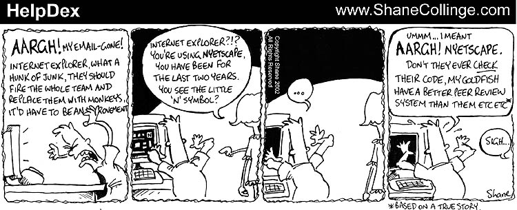
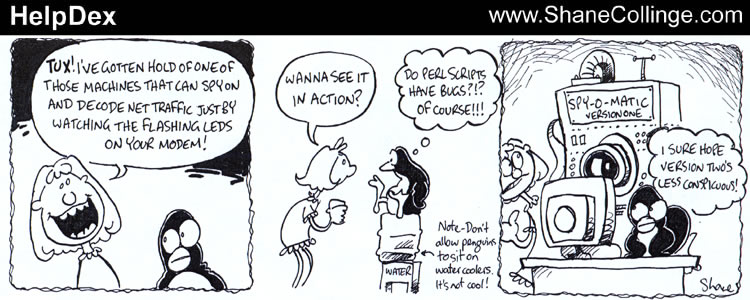
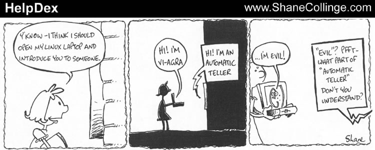
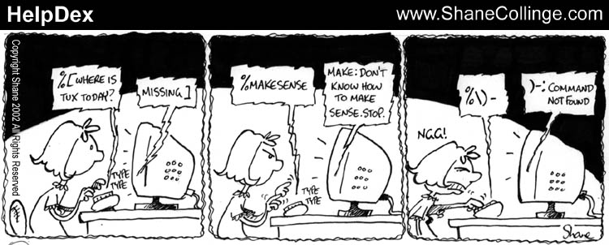
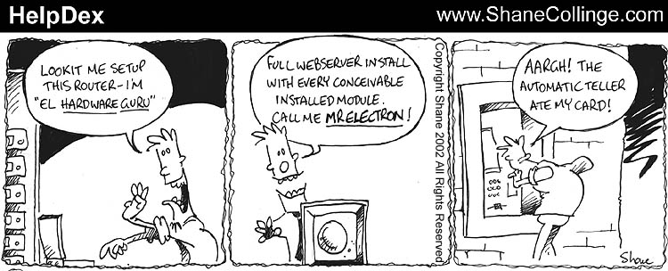
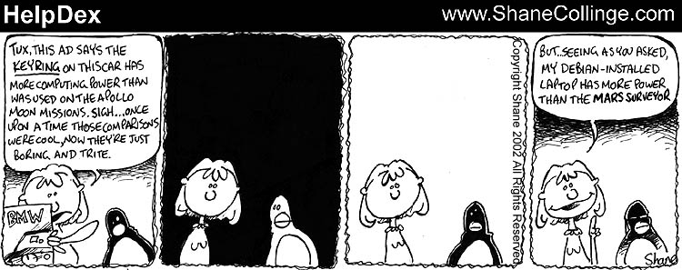
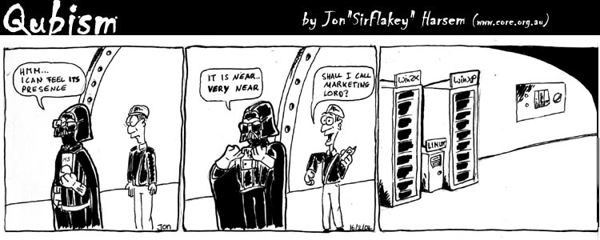

April 2002, Issue 77 Published by Linux Journal
Front Page | Back Issues | FAQ | MirrorsThe Answer Gang knowledge base (your Linux questions here!)
Search

Editor: Michael Orr
Technical Editor: Heather Stern
Senior Contributing Editor: Jim Dennis
Contributing Editors: Ben Okopnik, Dan Wilder, Don Marti
![[tm]](../gx/tm.gif) ,
http://www.linuxgazette.net/
,
http://www.linuxgazette.net/
 The Mailbag
The Mailbag
Send tech-support questions, Tips, answers and article ideas to The Answer Gang <tag@lists.linuxgazette.net>. Other mail (including questions or comments about the Gazette itself) should go to <gazette@linuxgazette.net>. All material sent to either of these addresses will be considered for publication in the next issue. Please send answers to the original querent too, so that s/he can get the answer without waiting for the next issue.
Unanswered questions might appear here. Questions with answers--or answers only--appear in The Answer Gang, 2-Cent Tips, or here, depending on their content. There is no guarantee that questions will ever be answered, especially if not related to Linux.
Before asking a question, please check the Linux Gazette FAQ (for questions about the Gazette) or The Answer Gang Knowledge Base (for questions about Linux) to see if it has been answered there.
 Please help - private email setup
Please help - private email setupHi there
I would like to know how to set up my email on my home network with win98 outlook express and Linux.
I would like to set it up so that I can email anybody else in the house on the network and email via the internet when needed.
Thank You
Cheryl
Video Card and OpenGLFirst, some recommendations for a video card (other than Nvidia) that works very well with Mesa and other standard OpenGL apps. I'm considering Ati Radeon, but would like to hear input from others.
Second, I have a TNT2 and run the Nvidia drivers and Nvidia GLX. I have had random success compiling OpenGL based programs in the past. Today, I learned that Nvidia's headers are not placed in /usr/include/GL so as not to override the defaults that are installed with your system. I'm not sure whether this was a recent addition to the Nvidia readme, or I just missed it all those times in the past. I run slack 8.0 and often create packages from the sources I compile to be used on other systems. If I switch to using the nvidia OpenGL headers will this cause problems with systems not running Nvidia GL?
Thanks for considering my issues.
vpnMultiple translators offered one; I have selected Felipe's as being the most faithful to the original text.
Anyone who feels inclined to answer this, it's okay to answer in English, just copy our translator so the querent can get a copy in Spanish, and the Gazette so I can post the follow-up in a later issue.
Alternatively, FreeS/WAN has been growing in popularity, and anybody who has an interest in writing a "setting the FreeS/WAN VPN up from scratch" article, possibly even comparing the effort against other tries for your own VPN (virtual private network) setup. would surely earn a great many virtual beers.
Normally the gang razzes people who want us to do their homework for them. But the truth is that the most useful thing the Gazette has to say for this subject is that you can buy one from SuSE (News Bytes, issue 74). See our author guidelines if interested: http://www.linuxgazette.net/faq/author.html
les agradeceria mucho que la información fuera en español
Hola quiero realizar una trbajo para la materia de redes me pueden ayudar gracias como creo una vpn con dos pcs con suse linux 7.0 y freeswan 1.4 como configuro los archivos ipsec.conf e ipsec.secrets, ademas quiero ver si funciona la conexión haciendo ping y telnet con y sin cifrado de una pc ala otra y usando ehterreal como se si ese paquete esta cifrado o no
quiero hacerlo usando primero direccion fija y luego direccion dinamica
primero con direccion fija
la pc1 tiene la ip 1.2.3.225 y la pc2 la ip 1.2.3.226 y el gateway la ip 1.2.3.1 como configuro esto con freeswan.
segundo con direccion ip fija en la pc1 y dinamica en la pc2
la pc1 tiene la ip 1.2.3.225 y la pc2 la ip x.x.x.x y el gateway de la pc1 con la ip 1.2.3.1 como configuro esto con freeswan.
ESQUEMA DEL LABORATORIO A REALIZAR
COMO HAGO PARA CONFIGURAR ESTOS ESQUEMAS CON FREESWAN
ESQUEMA PARA LAS DIRECCIONES IP FIJAS
__________
|INTERNET|
----------
|
|
_______
|modem|
-------
|
|
______
|router| ip=1.2.3.1
------
|
|
________
| switch |
----------
/ \
/ \
pc1 pc2
ip=1.2.3.225 ip=1.2.3.226
ESQUEMA PARA LA DIRECCION IP FIJA DE LA PC1 Y DINAMICA PARA LA PC2
__________
|INTERNET|
----------
| \
| \
_______ PC2
|modem| IP=X.X.X.X
-------
|
|
______
|router| ip=1.2.3.1
------
|
|
________
| switch |
----------
/
/
pc1
ip=1.2.3.225
Hello:
I am doing my homework for the "Networking" class, if you can help me I'd appreciate it.
How do I create a VPN with two PC's using Linux 7.0 and Freeswan 1.4 ?
How do I configure the files ipsec.conf and ipsec.secrets ? Besides, I want to find out if the connection works using ping and telnet with and without encryption from a PC to the other and, lastly; using Etherreal, how can I verify if a packet is or is not encrypted. ?
I want to do all this using first fixed IP addresses and later on dynamic IP addresses; let me show you the example with a fixed IP first:
PC1 has ip 1.2.3.225 and PC2 has ip 1.2.3.226, gateway has ip 1.2.3.1. How do I configure this with Freeswan ?
Second, with fixed IP on PC1 and PC2 has IP x.x.x.x, gateway remains the same with ip 1.2.3.1. How do I configure this with Freeswan ?
The LAB DIAGRAM to comply with is as follows: How do I make to configure all this with Freeswan ?:
DIAGRAM FOR FIZED IP ADDRESSES
[first diagram shown above]
DIAGRAM FOR FIZED IP ON PC1 and DYNAMIC IP ON PC2
[second diagram shown above]
who's linked?In Issue76 [Heather] mused....
...a way to ask a program which libraries it is potential-linking as well as dynamic-linking to, ...
Paul Ahlquist answered with this basic Tip:
If your system lib's deity of choice is "ld", then "ldd" should
answer the burning question.
Hmm, I guess I wasn't entirely clear what I was really asking:
dynamic-linking: as in not static, see 'ldd'. Binaries which are dynamically linked will fail if the library is not present. This is what almost every program on the planet does, because nobody wants to waste the memory space for extra copies of glibc, at least without a good reason.
potential-linking: as in "if this library is not present I won't shed a tear, but if it is I'd like to use GTK please", see ... ?
Such a binary would have to somehow check that the library was somewhere it had access to, then use dlopen() to request loading the one it found. 'strings' might reveal it, but I'm not sure how reliable it is for this, thus the question.
I suppose not very many people code potential-linking into their programs, so it's not the first thing that leaps to mind; still... since I mention "dynamic linking" in the same sentence as this other sort, one would have thought I meant something different?
Anybody know a reliable way to ask a program about the library-load requests it hopes to make? (as opposed to has to make)
But while I'm at it, another question: if anyone knows a reliable way to ask a binary which libraries it has been statically-linked to, that'd be nice too. 'strings' usually does reveal this, but... anyone know how reliable or complete it is?
serial programming in linuxHi, dear Heather,
This is Clement from University of Virginia. I am working on a project involving serial port programming under linux. I am new in the linux world and don't quite know where to start.
I have read most of the Serial-HOWTO online but none gave me the information that I needed.
I came across the linuxgazette.com and saw your discussion on serial programming. I am wondering if you can give me some pointers here. Any help will be greatly appreciated.
Things that I am trying to do: I want to connect the 9DB RS232 on my linux box to a Ericsson Bluetooth module. At the same time, I want to use one of unused pins, RI or CD pin for instance, to serve as a trigger to another circuit. Therefore, I need to be able to turn that specific pin to high and low at desired time.
My questions are:
Thank you very much. I am looking forward to hearing from you.
Clement Song
external modem problemTwo questions - one hardware matter, probably not linux. The other, a good question, especially in the general form, and would make an excellent article.
I have an V90/K56flex external modem that I use to connect with my ISP via a dial-up line. The modem obeys the Hayes command set. Now the point to note is that I have make a long distance call or STD call as we call it here in India, to establish a connection. This might seem a very expensive thing to do but I have no other option. Now each time I establish a connection using kppp the modem waits for almost 40secs inbetween transmission of packets whose duration is approximately 5secs. Thus after establishing a connection the modem activity is as follows:
40secs-no TD/RD, 5secs-TD/RD, 40secs-no TD/RD, 5secs-TD/RD, ........
Is this normal or is something wrong? Do you think there is something wrong with some configuration somewhere?
I suspect that there is something wrong... but it's most likely not configuration, at least not software-wise; it's either your modem, or your ISP.
The same thing happens in Windows too.
So... it's got nothing to do with Linux, then.
Try using another modem, preferably with a different computer, from your location. If the problem persists, it's your ISP. If it goes away, it's your computer and/or modem.
Thanks for your prompt reply. I have been trying out your suggestions. Unfortunately there aren't any Linux boxes in my locality. Changing the computer does not seem to improve the performance of the modem. As for trying out another ISP, I don't have any options.
Are there any parameters in the Hayes set that could affect the TD/RD rate of the modem?
Finally may I add another question? Could someone point me to an article or HOWTO about setting up qmail in a stand-alone home computer for transfering mail to an ISP mail server over a dial-up line. The documentation with the package isn't of much help.
-- amitava maity
Modules in /boot bad idea?I considered putting this in TAG - it's a mite large for Tips - but since I've given the nod to our readers rather eloquently, I put it here instead. Thanks to all our fans -- Heather
Hi,
I was disturbed to read Heather's suggestion to put kernel modules on a /boot partition ("booting multiple linux distributions" TAG #5, Issue 76). My question is, why would you bother to do this? It seems error prone to me.
Because on triple boot systems where all three are Linux, it means they can all use the kernels. As soon as the symlinks are established it works marvelously - personal experience.
I didn't recommend it as the only thing one could do; just a possibility among many, and part of an answer to a question asking "which partitions can be shared?"
To summarize: /tmp, swap, and ... if you are careful ... /home and /boot. If "error prone" are the kind of words that scare you from even trying something, or learning what "careful" means for your context, you should share neither /home nor /boot.
Unlike the kernel itself(1), modules are read through the filesystem so their visibility does not depend on which partition they are on. In fact, putting them on /boot means they are not available until /boot is mounted, which is noticably after the kernel is loaded. This complicates the boot process by adding a dependency that /boot must be mounted before any modules are loaded. (Normally /boot doesn't need to be mounted at all unless building kernels or modifying lilo).
The kernel wouldn't load sanely if a module were needed to mount /boot successfully. In my philosophy /boot is always mounted read-only because I keep its symbol map there, and a copy oof the .config I used to make it.
But of course, I build kernels all the time, it's something I do for clients as well as myself.
Further, there is more chance of causing collisions between distros in the modules tree. Presumably multi-boot systems use a separate / partition for each distro. This means that each will have its own /lib/modules tree with subtrees for each kernel version. Moving each of these to /boot means that each distro shares modules with the others. I would guess that usually that won't be a problem, but if it is then it would probably be hard to debug.
kernels are not distro specific and anybody who tries to tell you so needs to be whapped a good one. The only thing about them that even approaches it is that some distros are kind enough to package kernel-and-module kits for you. For each distro:
ln -s /lib/modules /boot/modulesThere, now they are all happy. "complicated" ? no. "error prone" ? only if you're foolish enough to trust a packging system to remove kernels for you. The only one I even let try is debian, and then only when I have known good kernels that LILO knows about already.
mounting /boot earlier in a startup sequence may be needed for some distros. If one such distro is among your dual-or-more Linux mix, then I heartily recommend initrd so you'll never need to worry about that.
But it works fine for mixing SuSE with RedHat, as of a few revisions ago on both of them.
The only advantage I can see to putting modules on /boot is being able to share disk space for them between distributions.
Gawd yes.
But the complication of having several distros mucking with each other's modules seems to outweigh that.
I don't let package managers "muck" with my kernels and you shouldn't either. As soon as you know enough about what you want in kernels to care this deeply then you should not be worrying about packaged kernels anymore - roll your own, make it match your real hardware, and use the same, well behaved kernel no matter which userland you select to run today.
I don't follow Heather's assertion that running a 2.4.x kernel package and a 2.5.x kernel built from source is simplier with this scheme - the modules are already kept separate in /lib/modules by separate version directories. Am I missing something more significant?
Ohhh, you had some sort of delusion that I was taking (for instance) 2.2.18 modules, 2.4.12 modules, 2.4.19-pre3 modules, and throwing them all in one directory together? That certainly wouldn't work.
Certainly this method can be made to work, but I would guess it is only for sophisticated users with specific circumstances. That's not typical of readers of The Answer Gang, is it?
There is no such thing as a "typical" reader of The Answer Gang. We get complex questions, simple questions, complex phrasings of simple questions (ugh), and simple phrasings of complex questions (yay!). We get discussions about the deep magic of programming and how to properly use the "date" program. And everything in between.
If you assume that by having a worldwide audience we are always going to play to the dumbest possible reader, sorry but that's not so. Every member of the Gang will answer any given question their own way; when all is said and done, I'm mostly just turning a conversation originally written "radio reciever" style (everybody gets their say in big paragraphs) into a more readable "group conversation" style.
In my case, by the time someone is considering triple booting anything, they are sophisticated enough to consider options such as these that I have used.
But a good point to bring up is: distros do change over time. Something that worked very nicely a year ago may be all wrong now, or very complicated now, or just have a much easier answer at hand now. As with maps, the picture and the advice are not the territory itself.
Dave
(1) Boot loaders like lilo need to load the kernel as disk blocks using bios calls. There was a period when disk sizes were large enough that the bios could not address the entire disk. On such a system, it is convenient to make a /boot partition at the beginning of the disk so lilo will be able to load the kernel. On smaller disks or with newer bios, this work around isn't necessary.
But may be handy if you have a disk disaster, to know that kernels were nearer to the front than the back of the drive.
Of course if you fear this, give up on LILO and switch to a boot loader which will seek out kernels wherever they happen to live on the disk. (Advice good for PC users only. Sparc's SILO already does that.)
P.S. /lib/MOVING can be deleted safely before rebooting. Although directory information will be removed immediately, open files will not have their inodes freed until they are closed. That's why /lib/modules can be replaced by a symlink while the system is running in the first place.
If one is going to be complicated, it pays to keep an eye on the details. In this case it cautions one, and may even comfort one, that you have not deleted the original directory until you actually make that choice, as a sysadmin, and after your new boot sequences are tested.
Tom's rootboot is good to have around too.
I don't let package managers "muck" with my kernels ... roll your own ... and use the same, well behaved kernel no matter which userland you select to run today.
Ahh, I see. I had assumed you had different kernels for different distros but of course the first time I found myself building the same kernel on two different distros I'd realize they should be shared. I guess I don't use enough different distros at the same time to run into that, which is why I asked about it.
Thanks for enlightening me.
...no such thing as a "typical" reader of The Answer Gang. ... more readable "group conversation" style.
Well, I appreciate that immensely. It's always nice to have something intriguing to think about even though the overall topic may be well known (if not to beginners). You do a great service to your readers when you throw in a little something over their heads. It gives them something further to explore rather than making them think everything has been said (never the case, of course).
Count me a fan!
Dave
Re: Job AnnouncementWe got a handful of a requests for job postings this month. Here's the policy.
LG doesn't publish job listings because they are temporary in nature.
LG is for more permanent material. Job openings change so frequently that by the time the next issue is published, the job could well be filled. And if we publish one job listing, we'd have to publish them all.
We do not currently have any other place to post job listings, so I suggest you try another site such as mojolin.com, dice.com, monster.com, etc.
-- Mike Orr
Sadly jobs.osdn.com closed down, but they recommend (in addition to some of the above) hotlinuxjobs.com, Brass Ring, and JobPenguin.
Attending any of the related user groups in the region to make your announcement may also be valuable. It may be useful to consider if you need someone who already has the skills, or if you'd gladly settle for someone talented enough that they can become the person you seek to hire.
SSC, our host, also hosts a "Groups of Linux Users Everywhere" resource
listing a lot of LUGS worth visiting:
http://www.linuxjournal.com/glue
Good luck in your quest.
-- Heather
Another round in the spam war...after some effort to get Mike his article submission...
PS: I'm trying a roundabout route to get this email to you; it seems
that your email server doesn't like my ISP's email server and has
rejected my last two attempts at emailing this to you. Since my ISP is a
large Canadian provider, it may take some time to persue and correct the
mutual email problems, and in the mean time, I'm trying this end-run to
get the article to you.
Our sysadmin Dan Wilder verified we're refusing mail connections from sympatico.ca because they're refusing mail connections from us. Or rather, the connection times out when we try to reach them. This causes a load on our mail server because the message sits on our outgoing queue for several days as it keeps trying to send it. Ask your ISP whether their mail server is blacklisting ssc.com. If not, we'll turn off the lock. But you may mention that we're still unhappy about the large amount of spam we receive from sympatico.ca.
Setting up a mail server in send-only mode is a common tactic by spammers.
Not saying that sympatico is doing this, because they need to receive mail
for their users. But that's why we block out any site that sends us mail but
consistently refuses connections from us. They do it because those "1 million
e-mail address" lists have a large number of obsolete addresses that cause
bounces, and their mail server couldn't handle the bounce traffic. (Or maybe
it could, but that would slow down their spam-sending.
 )
Which is exactly what's happening: sympatico users send spams to fifty
or a hundred accounts here that have been deactivated or never existed, and our
mail server bogs down trying to send back the bounce messages--which they
refuse. But probably what sympatico has is a misconfigured mail server. Our
error message tells who to call if their postmaster cares. From
/etc/postfix/access:
)
Which is exactly what's happening: sympatico users send spams to fifty
or a hundred accounts here that have been deactivated or never existed, and our
mail server bogs down trying to send back the bounce messages--which they
refuse. But probably what sympatico has is a misconfigured mail server. Our
error message tells who to call if their postmaster cares. From
/etc/postfix/access:
sympatico.ca 550 You refuse our connections so we refuse yours: 1-206-782-8808 if you have corrected the problem.
I'm cc'ing your sympatico address with this letter to see if it gets through.
-- Mike Orr
how we're trying to look Really Cool rather than just plainPlease see the Back Page for details.
 More 2¢ Tips!
More 2¢ Tips!
 Hard Disk: BadCRC errors from dma_intr on bootup...
Hard Disk: BadCRC errors from dma_intr on bootup...I had this exact same problem.
Try disabling HDD S.M.A.R.T. in the BIOS. Worked for me. Dunno why,
though!

-Chris
[LG 76] wanted #7 lockups after upgradeI would still suggest ram, even if it didn't cause problems before. Everything has to have a first time failure. I had a ram board that would work merrily along for days before suddenly locking up. I presume it would have shown itself sooner had I changed to something needing more ram to work well.
Secondly I'd look at heat. Is this machine in a warm place? A hot CPU is a grumpy CPU. Video players can put a strain on them.
Third, power supply. RH7.2 requires more resources than 6.2 required. More resource needs will put a strain on the power supply. Not necessarily a likely problem, but the symptoms certainly suggest it as a possibility.
Video cards can do this, as can sound as you suggested.
Finally, I've had problems with this myself, all caused in the past by KDE, gnome and screensavers. I have a friend that turned of f the screensavers in gnome and ran xscreensaver and his crashes stopped. He did the same in KDE and, again, crashes disappeared. This would also suggest a relationship between video boards, libraries, compile-time options, etc. Since most people use "outta the box" RPMs, the compile options aren't necessarily optimized to work with their other hardware.
Alan Brady
[LG 76] mailbag #2 make installYou're right
That's after the make that you must become root (you need to be root to install the files but not to compile them
xtraceroute question in the MailbagThere's a program in Debian unstable called xt (xtraceroute). It's supposed to plot the traceroute path on a picture of the earth. However, it doesn't seem to have enough location coordinates in its database to do anything. Has anybody used this program? Did you have to enter your own coordinates for all the hosts you traceroute from and to?
I am not subscribed to the list, or however it works, so please forgive me if this is going to the wrong adress, I did my best to accertain that this was the one. In anycase, I believe I can give an answer.
Many routers, and other end nodes, can be configured to know what thier geographical location is in longitude and latitude coordinates. This allows diagnostic information, and the curious, to find where on earth a particular device is located. However, network administrators may be too lazy to look up and configure such information, and/or not really care to. There really isn't any good reason to do this, except for satisfying the curious people.
.dat filesdoes linux support the playback of .dat files and what are the recommended (easiest/most powerfull/stable) player
Hi!
Well, probably you mean vcd (video-cd) data files (there is the actual movie data in there). If anything is related in some way to movie, always take mplayer (mplayerhq.hu). I follow their mailing-list closely and mplayer plays (nearly) every movie format you throw at it, for example *avi (divx), mpeg1/2, divx5, fli, film (from sega game cd) roq (id film sequences, for instance from quake 3 or rtcw), qt kinda, rm kinda, asf streaming even, wmv ....
So, take a look, it works great.
Robos
information on catching a packet through networkhi,
we are working on a project which involves playing with the network for capturing the packets. Right now we are stuck because we only know about SKBUFF i.e. socket buffer.But we are not able to track any detailed information about how to use it. Everywhere there is a brief introduction to the SKBUFF functions but not on how to use it.
If your team can help us in directing to a site or some other source through which we can capture each & every packet traversing through the network into our own Queues(userspace) it would be a great help to us.
We would be very grateful to u if u can help us in this matter.
Thanking you.
Regards Bharath Kumar
Hi Bharath Kumar,
I'm not sure about the SKBUFF functions, but you have at least three tools available for just viewing network traffic and saving the data to files for later playback.
You have tcpdump, ethereal, and tethereal. Ethereal gives you a GUI-based package where you could collect packets and view the stuff later with a detailed dissassembly of the packets. Tethereal gives you a text based equivalent version of ethereal.
Tcpdump is the old standby program which is yet another command line application. You get dumps of packets to the display, you get filtering capability, and you could save the dumps to a file. I should mention that ethereal also lets you filter the data. I have not tried filtering with tethereal.
Regards, Chris Gianakopoulos
man tcpdump, and the related software, like the pcap packet capture library. You might find that just letting tcpdump will be good enough for you; if not, the sources will likely serve as a hint.
Cheers, -- jra
debian picturesi have a cd of a Debian distrobution, is it posible to find the background folder and copy it to my mandrake 8.1 box, so that i can use the debian swirl as a background to Gnome and KDE,
thanks from elliot
I'm sure that it's possible, if not very easy. You would have to find the file in question and copy it from the CD to the appropriate dir of your mandrake system. The trick is finding the file. I don't use kde or gnome, so I can't be of much help with very specific information. However, if you have midnight commander installed (if you don't, then you should!) you can probably get the file you need - it will require also having "dpkg-deb" installed. That will allow you to open the Debian pkg file where the kde / gnome backgorind of interest is, and copy it to your system. It is probably a little beyond the level of neophyte though, so would require some reading up & digging for info on your part as to the whereabouts of those files under kde / gnome.
-- John Karns
Someone forcing you to use Mandrake and you want to show your debian colors?
Hmm, other than that it seems highly wierd to put a debian swirl on a Mandrake box (doesn't someobdy have a sufficiently cool magic hat and wand?) ... you might check in what is called the "propaganda" collection of wallpapers. I think it usually ships with large K setups anyway, but it has a repository on the net.
Also there are lots of themes at themes.org - probably the ol' Progeny theme is up there, and that probably has the Great Swirl on it.
-- Heather
[LG 76] wanted #4 DHCPAnswer by Eduardo Perez Esteban:
Yes, you can tell DHCP to answer requests coming only from a specified set of MAC adresses. Use the "deny unknown-clients" flag for this.
Note that this is a very weak security enhacement: an attacker only needs to know the network address you are using and try several IPs until he finds an empty one.
Regards, Edu.
Answer by Bill Barber:
This would be my suggested entries to /etc/dhcpd.conf
The xx:xx:xx:xx:xx:01; represents your MAC addresses and the belief would be if the MAC address is not in the list, it would not get an assigned IP address, I do these type of entries for my servers, but I also have non-MAC-specified hosts, so I don't know if it would refuse with just that. I think if you dropped the subnet portion, you would get an error.
See attached dhcpd.conf.txt
Dial in access with PPP
I am trying to setup a dial in connection to pc's in the field. they =
have dedicated phonelines to them and i can't get PPP to setup correctly =
on them. I have failed in every attempt. can you help me with this.
What tools are you using? What have you tried? What error messages are you getting? How are the PCs set up?
-- Neil Youngman
And you could have a look at mgetty from mgetty+sendfax -- does what you want, i.e. answering the phone, deciding if it's a data connection and initiating a login process (and pppd if you want, look at auto pppd).
K.-H.
DOSEMU Help!!
Alright I am getting close with running DOSEMU but I have run
into a glitch. It loads and runs MSDOS but I can't get Himem.sys to
install properly.
I have added the proper lines to my msdos config.sys file. Here is what it reads:
DOS=HIGH,UMB BUFFERS=30 FILES=50 STACKS=0,0 LASTDRIVE=Z device=c:\dos\himem.sys devicehigh=c:\dos\emm386.exe ram
You mean that this is the adequate setup for your applications under `true' ms-dos, right? If so, can you check what the `mem' command says once you have booted your machine into a real-mode dos session? It'll be a good starting point to determine what your memory requirements actually are (see below).
Then the config.sys within freedos reads:
DOS=UMB,HIGH lastdrive=H files=20 rem buffers=10 device=c:\dosemu\himem.sys devicehigh=c:\dosemu\emm386.exe ram rem devicehigh=c:\dosemu\cdrom.sys shell=c:\command.com /e:1024 /p
But when I start dosemu I get the following messages:
HIMEM: DOS XMS Driver, Version 3.10 - 09/30/93 Extended Memory Specification (XMS) Version 3.0 Copyrigth 1988-1993 Microsoft Corp. ERROR: An Extended Memory Manager is already installed. XMS Driver not installed
Yep. This is caused by the `himem.sys' line for sure.
Since an extended memory manager is already integrated in dosemu's core, you don't actually need `himem.' All the necessary XMS functions are available upon startup even without it -- hopefully.
EMM386 not installed - protected mode software already running.
The original `emm386' won't run if the CPU is not in real-mode (as opposed to protected/virtual mode). Linux being run in protected mode, this is the reason why an alternative `ems.sys' is shipped with dosemu. Normally this replacement expanded memory manager should provide the same facilities to dos programs as its MS counterpart.
The largest part of EMS memory management code is probably hidden deep
within dosemu itself (ems.sys is only a few hundred bytes in size!)
Advantage: more memory available for dos programs

I know emm.sys comes with DOSEMU but I need to load emm386.
Mmm... What makes you think so?
AFAIK the only tunable settings regarding the memory management in dosemu are:
All this is controlled by the dosemu built-in memory managers.
By using the output of the abovementioned `mem' command in a `true' dos session, you should be able to set up the relevant parameters in your dosemu.conf file and get your application programs happy; e.g.
C:\>mem Memory Type Total Used Free ---------------- -------- --------- -------- Conventional 640K 69K 571K Upper 90K 40K 50K Reserved 384K 384K 0K Extended (XMS) 97,190K 598K 96,592K ---------------- -------- --------- -------- Total Expanded (EMS) 32M (33,947,648 bytes) Free Expanded (EMS) 32M (33,554,432 bytes) Largest executable program size 571K (584,672 bytes) Largest free upper memory block 50K (51,152 bytes)
In your dosemu.conf file the corresponding settings would be:
$_dosmem = (640) # in Kbyte, <= 640 (default) $_xms = (98304) # in Kbyte (instead of the default 1024 Kb) $_ems = (32768) # in Kbyte (instead of the default 2048 Kb)
In fact you should not give such high values to dosemu. 16 megabytes for each (or even less) may still meet your actual requirements. Begin with large enough values then decrease them and retry until you find the optimal setup.
If this method doesn't succeed, well... I don't know. Maybe the apps you're trying to run do not comply with the EMS official specs. Aren't there Linux ports or equivalent programs?
Oh, and don't forget to replace the himem and emm386 lines in your config.sys with:
device=c:\dosemu\ems.sys
(or devicehigh=...)
Help would be...um..helpful
Indeed
 So I hope this does.
So I hope this does.
...Didier found a more helpful tidbit to throw in...
Begin with large enough values then decrease them and retry until you find the optimal setup. .
And in fact the system won't let you do that unless you increase the kernel SHMMAX setting (amount of IPC shared memory available for user processes) as well. The Linux kernel (2.4.x) default value is 32 megabytes. In the above example you would need at least 96 + 32 = 128 Mb of shared memory.
For in such a case, dosemu would complain about being unable to satisfy the user's memory settings (see the boot.log file). Assuming you have enough RAM in your system, you'd have to issue (as root) a command like:
echo 134217728 > /proc/sys/kernel/shmmax
The actual value -- expressed in bytes -- would depend on the total amount of memory (XMS + EMS + DPMI) set up in your configuration file.
However strangely enough the 2.2.x kernel doesn't seem to impose such restrictions (although the /proc/sys/kernel/shmmax entry is present).
Regards, Didier Heyden.
Dos linux partition accessIs there any dos program that would allow dos to read and write to a linux partition? if so is there a free version out there?
Thank You
Brian Binkley
Hi Brian!
There is "explore2fs", but thats under win, don't know if it runs under dos too: http://uranus.it.swin.edu.au/~jn/linux/explore2fs.htm
-- Robos
The owner has a big fat (no wait, ext2  ) WARNING: that write support is
at the moment very, very risky. Which I guess puts it in the same boat as
Linux' NTFS support...
) WARNING: that write support is
at the moment very, very risky. Which I guess puts it in the same boat as
Linux' NTFS support...
Peter van Sebille wrote FSDEXT2 as a standard MSwin filesystem driver (Jay found it too. "Hi Jay!" she says waving cheerily), but it does not write at all; he had "0.16" stable and "0.17" dev (the dev one under GPL)... but another fellow Gerald Shnabel seems to have taken up the torch, at least enough to make it work on his win98 systems, and released version 0.163. For you license fans out there, he derived it from the license-unknown 0.16, but explicitly put copyrights and announced that it's under the GPL: http://www.schnabel-online.de/fsdext2.html
Way back in 1995 the Linux Gazette mentioned ext2tool, and since I found it mentioned in the dosutils directory on my SuSE 7.3 stuff, I guess the thing still exists. Too bad SuSE only provided the sources (eep) so it makes me really wonder how long it's been since they were last tested...
-- Heather
INSTALLING RED HAT 7I am trying to automatically install redhat 7. The message I keep getting is not enough disk space (there is). Do I need to partition the disk? I want a dual boot system my current op is windows xp and the filing system is ntfs. If I need to partiton the disk is there some very, very, very simple info on how to do it available.
Yes you need at least one partition for Linux, preferably several. There's some info at http://www.linuxdoc.org/HOWTO/mini/Linux+WinNT.html
If you don't want to reinstall from scratch your best bet is to buy/borrow a copy of PartitionMagic and use that to shrink your XP partition and make space for Linux partitions.
It is possible to run Linux off just one partition, but well chosen multiple partitions make it more robust, as filling one partition won't bring the whole system down.
As a minimum you need a root partition and it's rare to run Linux without a swap partition as well. There are some recommendation for partition sizes in the Answer Gang Knowledgebase at http://linuxgazette.net/issue58/tag/11.html and you may also want to browse http://www.linuxgazette.net/tag/kb.html#fs
Thanks and I look forward to hearing from you
My pleasure, but please turn off that HTML crap in your email.
Sincerely
Neil Youngman
[TAG] Recompiling of a linux kernelHi! All
Does anyone know of a linux site which gives a brief description of each & every option given in the "xconfig screen" while recompiling a linux kernel.
Besides the help button next to each of them which have useful information in most of the cases -- no I don't know websites having a full list. Also the ones difficult to choose are not the standard options which have very helpful entries in the "help" anyway. Mostly the problem is with short lived hacks which are there for some few kernel versions and disappear again. It would be rather difficult to keep a website up to date.
A look into the kernel source is always helpful (for example one could search recursively through all *.c and *.h file in the kernel tree where the OPTION_FLAG is actually used and have a look in that file. Some of the sources are extensively commented, especially the details of some hacks or the consequences of using/not using certain options. I remember lot of configurable (and documented!) options directly in the source of the aic7xxx SCSI module which now gradually moved over to xconfig entires.
There are webpages (like www.kernel.org) where you can have annotated kernel source, browse it and have direct access to the changelog files which also are helpful in some cases for choosing kernel options.
K.-H.
[TAG] Linux NEC printer problemSir,
I have been unable to print with my Printer (NEC PinWriter 5300) I am using RH 6.0 and my printer is an (old) NEC pinwriter. I'll already email the manufacturer of this Printer then they told me used Epson LQ850. I use the Epson LQ850 driver with Windows. Where i can get the postscript of this printer. I checked all the How-To but I am still clueless. Could you please help?
I recommend visiting http://www.linuxprinting.org
I cant find the specific pinwriter, but the epson LQ850 is there, reported as working perfectly with the ghostscript driver lq850
So you have to setup your printing with the lq850 driver. To check if it's supported by your ghostscript run:
gs --help
it seems not to be compiled into the standard ghostscript (coming with SuSE Linux [67].?) so you may have to recompile ghostscript and put the driver lq850 in the right makefile/includefile. See the README and INSTALL coming with ghostscript.
K.-H.
Memory MappingHi friends,
I have tried using the mmap function in linux and succeeded.
The Info Pages say about a particular flag in calling mmap.
`MAP_ANON'
This flag tells the system to create an anonymous mapping, not connected to a file. FILEDES and OFF are ignored, and the region is initialized with zeros.
Anonymous maps are used as the basic primitive to extend the heap on some systems. They are also useful to "share data between multiple tasks without creating a file".
I want to know how 'mmap' can be used to "share data between muliple tasks without creating a file" as is said above.
See section 14.9 of "Advanced programming in the Unix Environment" by W Richard Stevens. To summarise briefly, if this is used together with MAP_SHARED, this region can be shared by the creating process and any child processes created with fork. According to section 12.9 memory mapped regions are not inherited across an exec.
Neil Youngman
what is NET4?Someone told me that Linux uses a TCP/IP suite called Net4. What is that? for example, how is its TCP different from TCP-Reno?
Hi Ming,
Linux Net4 is based on Swansea University Computer Society NET3.039. The TCP/IP protocol suite, TCP-Reno is Berkeley code (the BSD stuff). It is my belief that Net4, although it may be influenced by other protocol suites, was written from scratch (other than being derived from NET3.)
Regards, Chris G.
NFS mount permissionI have an NFS mount problem here. I am doing all this as root. I have mounted a remote nfs filesystem on a directory on my machine. I want that directory to be accesible by a particular user on my system. For that after mounting to that directory I tried to make that user the owner of the directory, but it is not happening ("error : operation not permitted")
What is the correct way of doing this? sree
Hi Sree!
I don't know for sure (like most of the time) but something along:
-specifying user-pid in /etc/fstab behind the nfs-mount
-adding that particular user to a group that can read the drive
I've done the upper one some time ago, it worked, but now I forgot
... and am lazy right now

-- Robos
ISTR that you can't do this sort of thing remotely. If you want to muck about with ownership you need to do it on the exporting server. I forget the details but essentially you are only root for local filesystems, thus limiting the damage that remote hosts can do on exported filesystems.
-- Neil Youngman
Mandrake 8.1 and nVidiawe have all the linux gazette on the school intranet and from reding the artcles i find myself hooked on linux, i have one question though does installing Nvidia drivers for a Geforce 2 GTS overwrite Xfree 4.0.? or are drivers and xfree different as i would like to play quake and unreal on mandrake 8.1 Kernel 2.4.? but xfree 4.0.? is only 2D and xfree 3.36 with experimental 3D is very Poor. HI,
The nvidia drivers are just modules that plug into XFree86-4. Installing the nvidia drivers will not overwrite the Mandrake X drivers.
The reason being... the nvidia drivers are closed source, and there is only a binary distribution available from nvidia. There is an opensource project that writes open drivers (The ones installed by Mandrake)
In the XF86Config-4 file (edit with care in mandrake) the drivers are named "nv" for the open source ones and "nvidia" for the closed source ones.
The closed source drivers are far superior with very good 3d support. You will not win any brownie points from RMS for infecting your system with these.... but boy they run.
On the nvidia web site there is RPMs compiled for Mdk8.1, they work very well.
The "nvidia" drivers need a kernel module called "NVdriver", that has to be compiled agains the kernel headers for your current kernel. This is a non event with a standard Mandrake install, if you have downloaded that spunky new 2.4.18 kernel and tweaked it... download the source release for the NV_Kernel module from nvidia and recompile against the new kernel headers.
Some of these steps are tricky, if you are unsure, let me know... I have done this a couple of times.
Kind Regards Johan H.
Don't Like Your ISP's Choice of Name Servers? A 2 Cent Tip
I use a dialup account with my ISP. Many times, I get a good connection
with respect to data rate. But, my IP traffic throughput is not so good.
For example, several seconds to reach my favorite sites with ping

One cause was the name servers that were handed to my system during the PPP authentication phase (I know -- that's really DHCP, not PPP). I use wvdial for my Internet dialer. Here's how to force your own choice of name servers.
In your /etc/wvdial.conf file, make an entry like this:
Auto DNS=0
Create a file called /etc/resolv.conf. Put a couple of name server entries that you know works. For example (/etc/resolv.conf):
nameserver 192.6.1.194 nameserver 198.6.100.194
That's it!
Regards, Chris G.
P.S. How can I disable the Link Quality Requests when using PPP with wvdial? I would look on the wvdial site, but their documentation did not even mention the "Auto DNS" configuration entry.
share the directoryHi,
we have a lan setup of about 6-7 computers in our hostel. My problem is that i want to access files on other computers which have booted in windows, through linux.
I guess you found the button in win where you "share the directory" This is in windows what samba does for linux (actually samba implements the windows protokoll for file sharing).
we have got over the problem the other way round by configuring samba. can you help me on this.
looking forward to your reply
Search for linneighborhood using your favorite search engine.
linneighbourhood seems to be a frontend for all the smb tools to use windows shared in Linux. smbclient and smbmount are the most interesting ones to have a look at for first experiments.
K.-H.
Machine Check Exception!Hi Answer Gang,
<Howdy!>
I'm a Linux Newbie, and I had some funny (maybe not so funny) problems with my system -
I'm running SuSE Linux 7.1 (Kernel 2.2), on an Intel Pentium-II(450 Mhz) box.
Hey -- you're running exactly the same distro and version as me. We also happen to be running the same kernel version. I think it's time we re-compiled our kernel using the latest sources!!
-- Thomas Adam
It used to hang all of a sudden, usually with a beep or two, and the keyboard, mouse and display would freeze.
I noticed the following message on my xconsole:
message from syslogd@shankha:
shankha kernel: CPU0 Machine Check Exception 0000000000000004
shankha kernel: Bank 1: b200000000000115<0>
kernel panic: CPU context corrupt
Do you happen to have Memory with parity? I've never seen a message like yours -- but this looks like a detected unrecoverable memory fault. (this bank 1 line gives me the hint).
grab memtest86 from somewhere and run it as long as it needs to throw the memory errors at you. Could be over night..... Check if the memory modules are sitting tight in their sockets and repeat. Exchange the memory modules and test again. If still errors occur throw it away and get a new one.
-- K.-H.
If you've got, say, four modules, do this: swap 1 and 2. If the error address doesn't change, then the problem is not in those; if it does, then swap 1 and 3. If the address doesn't change after that, the error is in #2; otherwise, it's in #1. I'm sure you can figure out the rest of the troubleshooting method from there.
-- Ben Okopnik
Plus get an air cannister and while you have the machine off, scare all the dust bunnies out of your boards and fans. Maybe there's some static charge catching up on something.
-- Heather
[TAG] two monitors
i have a 32 mb geforce 2 GTS running with a 21" monitor under mandrake
8.1 using xfree86 4.1.0 and latest nvidia drivers at 1600x1200
my question is can i run this resolution and put a 32mb tnt2 PCI
graphics card in aswell to run at 800x600 i have run two montiors before
on my windows box but both cards have to be at the same resolution, i am
asking this as i have a spare graphics card and old 15" monitor laying
around and want to put them to good use
I myself run the NVdriver on a laptop -- but there use the nvidia TwinView
option and it's one card with two screens. It rather convienient to define
different resolutions and relations of the two screens (like the small one is
s specific part of the large one for presentations where you can have
additional shell windows nobody else is seeing on the beamer
 or you can
tell it that the CRT is left (or right, above,...) the Laptop.
Then the two screens act as one huge one. The same "restrictions" as in the
XFree link apply: most Window managers just don't care about the screens and
open the windows where ever they please -- which might be right across both
screens.
or you can
tell it that the CRT is left (or right, above,...) the Laptop.
Then the two screens act as one huge one. The same "restrictions" as in the
XFree link apply: most Window managers just don't care about the screens and
open the windows where ever they please -- which might be right across both
screens.
The "normal" (i.e. not xinerma or Twinview) mode is to run two X-displays on the two screens. Then you can't just cross from one screen to the other dragging some window. You have to give it a "-display :0.0" or :0.1 as display name and the window will go there.
Since you've got the cards how about trying ? PCI ad AGP cards should be able to share or rearrange their resources so the can coexist.
K.-H.
winux?after reading my favourite computer mag i became interested in one main topic of their ramblings
that was that there may be a operating system available soon called winux that can run linux and windows programs natively, i am unsure of who is trying to make this or wether it will go ahead, perhaps you know something about this new OS, because it seems quite interesting.
I think that's LindowsOS, see http://www.lindows.com
Neil Youngman
xfree86 4.2On 10-Mar-02 Blandin de Chalain wrote: This is a multi-part message in MIME format.
would you please stop sending a hml-copy of everything? thanks.
For the record, yes we're a webzine, but no, your HTML does not help the web-editor's job in the slightest.
ive just found out about xfree86 4.2
me not. what's the special improvement to 4.1?
Among other things the newer code is now less idiotic regarding the perfectly good S3 family cards I have around my place. However I'm not jumping from working X 3.3.6 for that alone. Lots of other new drivers to clue in on either older cards, or bleeding-edge-new cards. The mice drivers are sparter now. Gamers and other GL fans will be pleased to know Mesa got merged. Other cool things. PEX and XIE extensions are deprecated and SuperProbe was removed (waaaah, I liked being able to ask the darn thing what it thought it was finding, seperately of a startup attempt).
One of the beauties of free software, as well as the "everything is parts" UNIX-like philosophy, is that (drum roll please) you do not have to upgrade to the latest-and-greatest all the time just to make a few major apps work.
i am currently using version 4.01 on linux mandrake 8.1 and have = downloaded the nvidia drivers for my geforce 2gts i am unsure of what files i need to download as i cannot see a single = file, all i see is confusion as i am very new to linux,
the nvidia site is somewhat confusing there, I agree. But then it's only a very long list of binary distributions -- you want to get one of them only if it's matchings yous exactly.
Otherwise take the generic source tgz packet and compile yourself. The README contains the steps necessary to install them. It's long and goes through all of the various packages for all the distributions so you need to read only some part up front and then the specific part for the package you actually got.
Generally you will need the GLX-package and the kernel package.
can i install the nvidia drivers on xfree 4.01 and upgrade to xfree 4.2 = later.
no idea -- I'm running the 1.1514 nivida drivers right now and that does not require 4.2, so I didn't bother upgrading a running system.
Hmm, 4.2 says it released late January, so maybe if my more experienced eyes surf over to nVidia...
Hmm, "Drivers" at the top of the Nav, "Linux" last among the bullets, new driver release posted March 7. (wow, only a few days ago) Not that hard to find, at all.
The part more likely to be confusing to newbies is that the driver comes in two parts -- a component to be added to your X server, and a component to be added to your kernel source before building a fresh kernel. That means you'll want to have sources around for X (oh dear, building X isn't for novices) and for your kernel (make menuconfig is pretty easy to use).
Or, if you happen to use one of the two distros the nVidia people themselves use, you can get Red Hat or Mandrake packages... no SuSE, eh? that sucks. I seem to recall nVidia doesn't want other folks shipping their binaries? (clicking open that "Legal Info" link) hmm, standard corporate "this is ours not yours and you're licensed for one copy at a time" stuff. That would suggest that I'm right in this regard. Checking Debian, there's a package 'nvidia-glx-src' which builds it for you, but the version in testing is (no big surprise to me) not the one posted a few days ago. Which is ok since it still has xfree 4.1 in it too.
also how can i boot to console mode to install the nvidia drivers, or = can you just do it from an rpm installer in x.
nVidia notes that they have an NVchooser script you can use, and it will get you the right rpm.
You may be able to upgrade from X -- overwriting the former X drivers present. On reboot this could get you in trouble if your default is a graphical login.
I really would have X turned off while you update it. And I really would
back it up, since if your X already works it's a running setup, and if the
new stuff doesn't work so happily, you'd lose your GUI. Which is even worse
than annoying if you use a GUI login prompt

Anyways the real reason it's important is that file handles for any old parts which are open, will not be re-opened to clue in. To be sure you did that you'd need to stop X anyway. Safer to know it all got tweaked at once, then turn it back on...
You could try typing (as root):
init 1
on the commandline of a shell which would bring you down to a text-login screen in single user mode. To test the news drivers you could try "startx" to get an X-screen back.
You might have to turn networking back on... single user mode strips a lot more than most people want. Me, I favor keeping a text mode runlevel around; that'd usually be telinit 3.
One of the few things that gives me a headache in Debian is that when you add new bits that darned thing tends to add them to ALL the runlevels.
If it's ok end it again and issue "init 3" or 5 (?) to get back to the graphical login.
traditionally it's been 5, but you really have to check your own system's init sequence to be sure. Before you start poking around in single user you can run the command 'runlevel' and it will tell you where you're at already. For me /sbin/runlevel generates N 3
meaning, I didn't have a "previous" runlevel, and I'm currently at runlevel 3 (consistent with me preferring text logins).
I'm not running mandrake so I can't give you too much specifics on the init levels they use or if there is something like startx.
K.-H.
I believe they still have a directory structure similar to RH in that regard. I haven't encountered distros without startx in a loooong time, but, if you use a GUI login that's not how you're normally launching it, but gdm or its cousins tend to use the same xinitrc under the hood.
-- Heather
Linux Journal's Weekly News Notes Tech TipsYou can use Python to extract stats from mail.
$ ./mail-predictor.py richard@ssc.com Mail/inbox Mail/richard 798 total messages from richard@ssc.com, 31 in this hour of the week. Predicted activity level in the next hour: 6.526316
See attached mail-predictor.py.txt
Press Alt-F2, then enter ##make for the GNU Info page on make.
Shift-Insert pastes the last thing from Klipper into Konsole.
Use Control + to select files in Konqueror by shell pattern.
If fonts are coming out too small on Mozilla, and you want to block the browser from ever setting fonts below a certain size, just put
user_pref("font.minimum-size.x-western", 13);
in your user.js. (If you don't have a user.js, read "Customizing Mozilla": http://www.mozilla.org/unix/customizing.html.)
This option has changed from previous Mozilla versions; check out this bug report page: http://bugzilla.mozilla.org/show_bug.cgi?id=30910 for details.
 The Answer Gang
The Answer Gang

 Greetings from Heather Stern
Greetings from Heather SternIt's a party, by Jove! aargh, TrueReality strikes, he's caught in a trainwreq and can't host. nice that Amanda can be his backup, Pronto! The gals Rachel, Nadja, and Molly, help her jumpstart! Brunhilde, and edna handle the MUSIC, Thomas' brother gives out directions, and with my Best Effort I don't get lost.
everybuddy from the PostOffice was there, Cyrus, Althea, Ishmail, Fentun, Virge, Felix, Buffy, biff and their mutt. The old majordomo greeted us; the Maestro was in the rosegarden by the lilypond.
joe, kate, and ed were full of vim. DAVIS and JAMES brought out the snack tray: sawfish and bluefish with SAUCE, freshmeat with SPICE (ginseng, Oregano, SALT, and coriander, using a tenderizer), plus a Jellybean bowl. Jasper handed out CUPS of juice, c.o.l.a, WINE, Java, Espresso, plus all the virtual beer we could drink.
All is not Solid in the citadel though. Things got loco -- a Kaptain asked me into the ConferenceRoom so we could SpeakFreely. "The Comanche, Mohawk, Cherokee, are making a Martyr of the Apache, somebody's Wagon almost squished the Dillo, Wikki Tikki Tavi is holding the python and boa at bay, the nighthawk and our cat oneko are both chasing the cricket, the Anteater ate Langton's Ant and I'm afraid the BasiliX is about to turn them all into lawn ornaments. To top it off that pimp won't lose his smirc. Mama Mua, what a Maelstrom..."
"Don't Quake II much." I had a plan. Put a crafty SPiN on it and I Phorecast these FOLK would avert Doom and have a Grande time.
We should Definitely do this again next August.
CRC errors on floppy disksFrom "David"
Answered By Dan Wilder, Heather Stern, John Karns
Thankyou for taking the time to read this. I am marked down as one of the university geeks, and it is coming around to the time to hand in essays/dissertations etc. Many people have put misplaced faith in the reliability of floppy disks. Is there any tool for linux, which will allow me to ask the floppy driver in the kernel to keep trying, so I can put together the statistically "best" hex dumps,or extract raw text from Word docs etc.
[Dan] 'Fraid I can't offer any way to recover the data once it's lost to bad sectors, tho no doubt some way is possible.
Instead I'd like to offer the format script I use for floppies before I'll trust 'em with my data. It culls out a lot of floppies, and I find that floppies which once passed, after sitting a few years on the shelf, will often no longer do so.
User who runs this must have write permission to /dev/fd0h1440. Requires mtools. Watch out, some distributions may obsolete fdformat in favor of superformat.
See attached goodfloppy.sh.txt
 Today I resuced a 6 page essay 10hrs before it was due,
Today I resuced a 6 page essay 10hrs before it was due,
1. use dd to extract a raw image of floppy disks. This is sufficiently reliable that it's now the normal way I mount floppies on my laptop.
dd if=/dev/fd0 of=/usr/local/floppy/student-name-ddmmyy.144 bs=18k
In case you're curious 18k is the standard blocksize of a single track, so this is the "native" amount of bits the floppy read heads want to read anyway. It should be fastest and have the best chance of getting all the rescuable bits.
 I already take a copy, as I am not the only geek with enough time, and I
don't want to write anything back to a damaged floppy. Thanks for the
advice with bs=18k I will use that next time.
I already take a copy, as I am not the only geek with enough time, and I
don't want to write anything back to a damaged floppy. Thanks for the
advice with bs=18k I will use that next time.
2. the rescue
- See if Linux will mount the raw image - as it may be more reliable than a floppy whose cookie got slow (in other words a straight read is better than lots of little seeks)
- if not, use 'strings' on the resulting file, noting that some of the ASCII bits will just be raw strings of letters from headers and things (e.g. "GIF89A")
Ugly but better than nothing during Finals Week.
 Most disks that I have come across mount OK, but if all else fails, I
have all night, a copy of Peter Nortons PC Programmers Bible (plenty on
disk structure, FAT layout etc), and the promise of as much beer as I
can drink from the hapless author.
Most disks that I have come across mount OK, but if all else fails, I
have all night, a copy of Peter Nortons PC Programmers Bible (plenty on
disk structure, FAT layout etc), and the promise of as much beer as I
can drink from the hapless author.
 ...but the 200
words held on the bad sectors were well and truly gone.
...but the 200
words held on the bad sectors were well and truly gone.
 This is not so good, what I was really after is someway to attempt to
make best guesses for what is in those bad-sectors. I know that it
sounds difficult, but I am looking for something between Scandisk for
windows, and professionals in a clean-room!
This is not so good, what I was really after is someway to attempt to
make best guesses for what is in those bad-sectors. I know that it
sounds difficult, but I am looking for something between Scandisk for
windows, and professionals in a clean-room!
Short of trying the floppy again in a floppy bay with different alignment, basically you either got the bits, or you didn't. And indeed, you could try that (though it submits the poor dented floppy to N more visits by drive gear) and see if the md5sums of any of the dd images are different. If so, scour the tweaked ones for anymore bits you can rescue also. Don't hold your breath, but you'll have earned the extra brewskies if it works.
Clean-room efforts are basically able to micro-position the heads in the hopes of seeing the last two to five major writes. Ontrack does such recovery, but I dunno if they do floppies at all. I suspect not.
 Is there
anything better than dd conv=noerror, that will allow me to access these
dodgey disks from linux. I am kind
of looking for something like Spinrite by Steve Gibson, but I would like
to have it
for linux, and for free.
Is there
anything better than dd conv=noerror, that will allow me to access these
dodgey disks from linux. I am kind
of looking for something like Spinrite by Steve Gibson, but I would like
to have it
for linux, and for free.
If you want a hex editor in the spirit of Norton Disk Editor, try lde, but frankly, I'd use 'hexedit' (a curses-terminal program) on a dd image of the floppy before I'd consider that ... to reduce the amount of usage tried on an already poor-condition floppy.
Oh yeah, and much as ZIP and LS-120 bays are less popular, their cartridges are much more reliable than standard floppies, and CD-RW even more so (but sadly CD-RW cannot be written to directly, just burned as a complete image -- and DVD-RAM drives are still not in the normal-consumer price range, plus they're rare even in the Silicon Valley).
 Forget DVD-RAM / CD-RW. Most people use floppies to move work between
computer labs with internet, and our rooms without. Nobody in college
has administritave access to the networked PC's, and the amount of
people who simply use a floppy to avoid copying files around is scary.
We have just got new ZIP-250's, so things should look up for next term!
Forget DVD-RAM / CD-RW. Most people use floppies to move work between
computer labs with internet, and our rooms without. Nobody in college
has administritave access to the networked PC's, and the amount of
people who simply use a floppy to avoid copying files around is scary.
We have just got new ZIP-250's, so things should look up for next term!
Oh yeah, remind people not to leave their floppies (or cartridges) lying around in the noonday sun on the car shelf, or other places where they would get toasty and you wouldn't put VHS tapes. It's basically the same type of media with the same type of susceptibility to heat damage.
Zip disks don't seem to have such a comparatively large opening in the housing as floppies, which may a reason they fare better. But one is very well advised to keep all magnetic media, including tapes, in a protective case or other dust barrier. I've noticed that plastic materials seem to act like magnets for carbon dust, which when smudged leaves a grease spot on the plastic material.
I don't know if your policies are about guest-level access only or you create actual accounts for people there. If the latter then some sort of share server (samba or perhaps one of those file-appliance boxes that have gotten so popular) which looks like the same drive letter on all networked boxes, would get people to use that instead. I like H: for "home" but your tastes may vary. Combined with the permissions-by-login behavior samba can provide it's not too bad. You might not want to make it automatic or perhaps people will abandon logged in machines and mess up each other's space. And not everyone would use it, perhaps they want to take some work back to the dorm with them. They might even get them out of sync. (I think the MSwin buzzword for doing it the right way is "My Briefcase" but don't quote me, I could be wrong these days. Here in linux we use rsync, and have to be careful about the commands we give it, too.) In other words it has its own headaches... but it's not as unreliable at the bits level as floppies are.
I think that's about as much as Linux can really do for throwing software against what is basically a hardware and a clue-ware problem, but there ya go. Best of luck in the efforts!
 Thanks in advance
Thanks in advance
David
P.S. If you publish my e-mail can you obscure it somehow. My uni acct is so far spam-free and I would like to keep it that way.
Can't See Boot Messages Even Though RedHat 7.2 Boots OKFrom Bill Rust
Answered By Thomas Adam, Heather Stern
Hi,
I'm at a bit of a loss. When I install RedHat Linux 7.2, I get the Grub menu, and after I select Linux, the screen goes blank.
 I can see the
hard disk accessing, and after a couple of minutes X starts, and life is
good.
I can see the
hard disk accessing, and after a couple of minutes X starts, and life is
good.
 When I check my dmesg and /var/log messages file, I see no error
messages on the boot. I also noticed that when I boot for the install
and to boot in rescue mode, I not only get messages, I get the picture
of Tux in the upper left corner of the display.
When I check my dmesg and /var/log messages file, I see no error
messages on the boot. I also noticed that when I boot for the install
and to boot in rescue mode, I not only get messages, I get the picture
of Tux in the upper left corner of the display.
 I've searched high and low in Google (web and groups), and your archives
and can't seem to find an answer. Any help would be appreciated.
I've searched high and low in Google (web and groups), and your archives
and can't seem to find an answer. Any help would be appreciated.
Hardware:
Athlon 1.33GHz (clocked at 1.33, at least for now)
ATA 100 UDMA Promise (motherboard) IDE
IBM 7200 RMP 40GB HD
Geforce 2 TI/AGP w/64DDR
SB Live value
52x CDROM
12/10/32A Plextor CDRW
I am dual booting with Win98SE (for games)
Things I've tried:
vga=ask,
then perhaps we can rule out the this cannot be a FB (FrameBuffer) problem???
Telling LILO to use vga=ask is only half of the troubleshooting -- you also need to know what to answer, because the nice graphical-text modes will not be listed there. Here's the table from the Linux sources /Documentation/fb/vesafb.txt file:
| 640x480 800x600 1024x768 1280x1024 ----+------------------------------------- 256 | 0x301 0x303 0x305 0x307 32k | 0x310 0x313 0x316 0x319 64k | 0x311 0x314 0x317 0x31A 16M | 0x312 0x315 0x318 0x31B
But, oh no, it warns that LILO cannot handle hexadecimal, you have to change them to decimal, 771 for instance.
Try any of these until one of them makes your system happy, then tell LILO to use it all the time instead of asking any more.
lilo
after you updated the lilo.conf file
Other than trying my suggestions already mentioned, I don't know what else I can do.
Perhaps you could send us a copy of the command:
dmesg &> ~/dmesg.txt
output???
Kind Regards,
Thomas Adam
P.S. I like the structure of this e-mail. It clearly states the problem, and what the querent has tried to do in order to solve it -- well done!!!
Ben's article is working.......
 Thanks for the quick response!
Thanks for the quick response!
 OK, I tried the keyboard thing after the screen went
blank; no such
luck, same behavior
OK, I tried the keyboard thing after the screen went
blank; no such
luck, same behavior
 I tried setting my initdefault to 3 instead of 5 in
the /etc/inittab
file. It still went blank immediately after the grub
menu goes away,
I tried setting my initdefault to 3 instead of 5 in
the /etc/inittab
file. It still went blank immediately after the grub
menu goes away,
 but interestingly enough, I never got a prompt after
what I can only
presume was the end of the boot process.
but interestingly enough, I never got a prompt after
what I can only
presume was the end of the boot process.
I know this may seem strange, but you should "listen" to your monitor as it boots up into init 5. If you hear a series of clicks then it is booting into a graphical display ok.
 Since I'm working blind here,
I can assume one of two things
Since I'm working blind here,
I can assume one of two things
 1) my console is not functioning
1) my console is not functioning
 or 2)
the system is hung. I suspect the latter, because
when I try to bring
up another terminal (CTRL-ALT F2, F3, etc), I still
get nothing - by the
way, CTRL-ALT F2 does work when I boot level 5. I
used the CD in rescue
mode to reset my inittab back to 5, and here I am up
and running again
(still have the blank screen tho).
or 2)
the system is hung. I suspect the latter, because
when I try to bring
up another terminal (CTRL-ALT F2, F3, etc), I still
get nothing - by the
way, CTRL-ALT F2 does work when I boot level 5. I
used the CD in rescue
mode to reset my inittab back to 5, and here I am up
and running again
(still have the blank screen tho).
What you could try, is the following:
[ ** I do not know how the init structure (i.e.
location of files is
organised under RedHat. But, if it is anything like
SuSE, then the init
files should be in "/etc/init.d" -- as per the LSB
standard ** ]
You should have on your system, a file called:
boot.local
into this file, add the following command:
setfont &
That might, un-blank your screen, it works on my laptop, and might just solve your problem.
 I forgot to mention that I tried the 'nofb' argument
after reading the
bootprompt HOWTO. I'm not ready to rule out the
frame buffer, however.
I forgot to mention that I tried the 'nofb' argument
after reading the
bootprompt HOWTO. I'm not ready to rule out the
frame buffer, however.
Maybe the answer would be to try to get it to work.
Any pointers as to where I could find a HOWTO??
http://www.linuxdocs.org
 With regards to the lilo question. Yes, I did run
lilo after the
changes. The reason I am referring to the Grub
screen now is because I
eventually had a boot problem.
With regards to the lilo question. Yes, I did run
lilo after the
changes. The reason I am referring to the Grub
screen now is because I
eventually had a boot problem.
 Since, I couldn't see the screen, I
couldn't see an error message. I was then able to
use the rescue mode
on the CDROM, but I couldn't find anything in
the /var/log/messages
file. I also did an 'ls -lrt' in the log directory
to see if there were
any newly updated files from the same day, but didn't
see anything. I
eventually gave up and reinstalled Linux.
Since, I couldn't see the screen, I
couldn't see an error message. I was then able to
use the rescue mode
on the CDROM, but I couldn't find anything in
the /var/log/messages
file. I also did an 'ls -lrt' in the log directory
to see if there were
any newly updated files from the same day, but didn't
see anything. I
eventually gave up and reinstalled Linux.
 I have attached the dmesg text. Thanks for the tips;
I hope we can get
this mystery solved!
I have attached the dmesg text. Thanks for the tips;
I hope we can get
this mystery solved!
I looked over your dmesg output...nothing out of the ordinary there.
Keep at it. I hope I have been of some help. Do let me know if my suggestion succumb or not.
Kind Regards,
Thomas Adam
The euro symbolFrom Mark McGrath
Answered By Jay R Ashworth, Mike "Iron" Orr, Yann Vernier, Ben Okopnik, Andreas Daab
Here's an interesting question that I thought you might take a look at. IT applies more to the Europeans among us but then maybe the wider community might benefit if it were broadened to the wider question of dealing with different fonts!
How is it possible to view the euro symbol on programs running on linux machines, programs like netscape, emacs, mutt, etc., etc.,
Thanks in advance.
Slán,
Mark.
This is a good one, and one that's cropping up on several of the mail lists in which I participate, as well. It's a multi-faceted problem.
Using non-ASCII characters (I was going to say "on a PC", but that's sort of obvious) requires several things:
Each of these is handled, in Linux, by different things, and you need to make sure that all the pieces are in place. Frankly, I wouldn't be surprised at all to see an amendement to X3.64, the ASCII standard (which I think is also ISO 10646), to include the Euro character.
Actually, I'm surprised it's not there already.
An answer to this question of the Euro has, probably not all that surprisingly, been written already; it's the Euro Character Support miniHOWTO:
http://www.ibiblio.org/pub/Linux/docs/HOWTO/mini/Euro-Char-Support
...but it's sort of weak, and may be specific to Finnish.
Hope this helps at least a little bit; you're correct; it's a weak spot.
To support other languages, various 8-bit charsets were introduced. The ISO-8859-x series ("man iso_8859_1") is the most common on UNIX. -1 (aka LATIN-1) covers Western Europe (Germanic/Romance languages), -2 (aka LATIN-2) covers Eastern Europe (Slavic languages), -3 (aka LATIN-3) covers miscellaneous Europe (and Esperanto
The higher-numbered series cover Cyrillic, Greek, Turkish, Celtic, etc. New series were added to address deficiencies in previous series for certain languages, and to add the Euro symbol.
LATIN-1 is the default charset for the Linux console and xterm, following widespread UNIX precedent, and because it was convenient for Linus and most of the original Linux users.
Codepage 850 and the like are from the DOS world, and do the same thing but in an incompatible way.
Russia is in an unusual situation because a native charset, KOI8-r, competes with ISO-8859-5 and Codepage ???. One advantage of KOI8 is that if the high bit gets lost, it degenerates cleanly into readable ASCII, and can easily be converted back by restoring the missing bit. Unfortunately, the makers of ISO-8859-5 and Codepage ??? didn't think about just adopting the KOI8 character positions. Blame it on the Cold War. Some Russian web sites have a switch link to switch between the four most common charsets.
All 8-bit charsets have the disadvantage that they can display only one other language family + English. If you need to write in two other language families, you have to use ASCII for one, because the console, xterm and text documents cannot change charsets in mid-document.
Unicode, being a 16-bit charset (or more), solves all these problems, but on Linux it hasn't reached the stage of no-brainer setup or universal support by all applications.
No Problem with Red Hat 7.2 and euro under console, KDE and konsole. I"m from Germany and have to put the following settings in /etc/sysconfig/i18n:
LANG="de_DE@euro" SUPPORTED="de_DE@euro:de_DE:de" SYSFONT="lat0-sun16" SYSFONTACM="iso15"
Okay, this gives me the euro symbol on the console. For X and kde remember to use the iso8859-15 charset, your correct language and country settings. If the euro symbol works in X, set it as curreny symbol in KDE.
If you wan't the euro for konsole, use unicode as fontset. Mozilla shows the euro, if you use the iso8859-15 charset with all fonts and as default character coding (Preferences/Navigator/Character Coding).
Hope this works for you.
Andreas Daab
ntfs clobbered my ext3fs!!From John
Answered By Faber Fedor, Guy Milliron, Ben Okopnik, Robos, Karl-Heinz Herrman
Hello,
Today I rebooted my happily working winXP/RH 7.2 system to a grub error 17. I can boot with a grub floppy into windows (chainloader +1), but not Linux. When I try to mount the linux partition in rescue mode (booting a Redhat 7.2 CD) and mount the partition it doesn't work.
An error message here would be nice, but you did so well in the rest of the message, I'll forgive you this time.
 Here is the listing from fdisk -l:
Here is the listing from fdisk -l:
Disk /dev/hda: 255 heads, 63 sectors, 2482 cylinders Units = cylinders of 16065 * 512 bytes Device Boot Start End Blocks Id System /dev/hda1 1025 1723 5614717+ 7 HPFS/NTFS /dev/hda2 1718 2416 5614717+ 83 Linux /dev/hda3 2417 2481 522112+ 82 Linux swap
If I run "fdisk /hda" and go (x)pert mode and then (v)erify partition table I get "warning: partition 1 overlaps partition 2. 16466623 unallocated sectors"
And as you may have noticed in the fdisk listing, my ntfs partition does indeed end after the beginning of my linux partition.
A flippant answer, you say? That's what I'm known for! But seriously, let's think about this...
Somehow, someway, your partition table got flaky. Now, the overlap occurs at the end of one parition and the beginning of another. What are the chances that you have Windows data residing at the end of hda1? If there is a good chance, then you're frelled, and you have learned why you should never put your operating system, your user data, and your application all on one partition.
If you had, say, put / on hda2, /home on hda6 and /usr on hda7, then in your scenario only / would be affected and that could be taken care of with a re-install as a worse case. As it is, a re-install would end up wiping out everything on hda2.
However, if there is a low chance that there is data at the end of hda1, you might/should be in good shape.
So, I'm assuming there is no Windows data written to the end of hda1, which means the Linux data is still on the hard drive (the partition table is read by the computer to determine where the partitions start and stop; there is no division done on the hard drive itself).
So I don't see why you can't fire up fdisk, and go in and set the end of hda1 to block 1717. Write the changes to disk, shut down the machine, sacrifice two chickens under a full moon (which it is tonight, so you're lucky you don't have to wait another month) and restart the machine. If you sacrificed the right kind of chickens (which is left as an exercise for the reader), it will come back up.
 That actually occured to me, but I thought I could
only make things worse by manually toying with this
stuff.
That actually occured to me, but I thought I could
only make things worse by manually toying with this
stuff.
Uninformed manual twiddling is something to be afraid of. Dynamite is not of itself dangerous; however, it becomes a terrifying thing when handled by the ignorant. Knowledge is the key factor that makes all the difference. Just to throw in my $0.02, Faber has hit this particular nail on the head. Also, note that just changing the disk parameters as he has suggested is fairly harmless, as long as you don't write any data to those partitions; if you write down the current numbers, you can always revert to them in the worst case (however, you already know that they're wrong, so that's not much help.)
 One question though - what command under fdisk
do I use to set the end of a partition?
One question though - what command under fdisk
do I use to set the end of a partition?
 When I try to fsck /dev/hda2 I get "Bad magic number
in super-block while trying to open /dev/hda2"
When I try to fsck /dev/hda2 I get "Bad magic number
in super-block while trying to open /dev/hda2"
My guess is that the first super-block is located in the overlap area, so that wouldn't help you anyway.
So try my suggestion <spooky music>if you dare</spooky music> and let us know how it turns out.
Oh, and next time, make some backups...
 I'm at the end of my rope here. There is a small
amount of data on the partition I'd really like to
retrieve. I can't think of anything unusual that I've
done recently to cause this problem - certainly
nothing with my partition tables.
I'm at the end of my rope here. There is a small
amount of data on the partition I'd really like to
retrieve. I can't think of anything unusual that I've
done recently to cause this problem - certainly
nothing with my partition tables.
Regarding the last sentences I have an idea: might it have been windows doing some "defragmenting"? Someone quite recently told me that win packs the stuff it intends to move to some other place temporarily at the end of the partition since there is most of the time some space left. This, in conjunction with your overlapping partitions, might have been the end of that particular linux partition (and might also not be saved by the methods destribed by the others since they assume that the data in the linux part is still intact...so I'd recommend 2 chicken, 2 ox and, if handy, a virgin...)
 I appreciate any
help you guys can offer.
I appreciate any
help you guys can offer.
-John Bronson
PS: Error 17 is described in the GRUB manual (http://www.gnu.org/manual/grub-0.90/html_mono/grub.html) as "17 : Cannot mount selected partition: This error is returned if the partition requested exists, but the filesystem type cannot be recognized by GRUB."
I spent about a year working at STAC Electronics in SQA (Software Quality Assurance - AKA Alpha Stage Testing) and nearly had intimate relations with HD's and their functionality.
For those lost in this conversation, Faber answered a question concerning HD Partitioning very well. STAC Electronics writes a program called Stacker (Double your disk capacity - Runtime/Real Time disk compression) For DOS/W!n3.x-9x and OS/2. I was the lead tester for the software as it came downstairs from the programmers.
 Well, I still haven't been able to effect any
permenant change with fdisk. If I do "fdisk /dev/hda"
the (c)hange command described before wants to change
the number of cylinders on the whole disk.
Well, I still haven't been able to effect any
permenant change with fdisk. If I do "fdisk /dev/hda"
the (c)hange command described before wants to change
the number of cylinders on the whole disk.
 If I do
"fdisk /dev/hda1" and do that command
If I do
"fdisk /dev/hda1" and do that command
 it seems to ask
the right question "Number of cylinders? Default: 699"
...699 being about right. You get 698 when you
subtract 1723 from 1025 (See my fdisk listing).
it seems to ask
the right question "Number of cylinders? Default: 699"
...699 being about right. You get 698 when you
subtract 1723 from 1025 (See my fdisk listing).
then delete the partition 1 (d or r ?)
and create a new one wih the same start cylinder but the correct end cylinder number. Then it's smaller. This only changes the data in the partiton talbe and nothing on the drive itself and is simply a resizeing of the partiton. The deletion in the partition table will not delete anything on the partition itself.
 Now, when I try to set it to a lower number (692 by my
subtraction) and (w)rite to partition table it calls
ioctl() etc. and does its thing, but the partition
table is still the same when I "fdisk -l"...Am I
missing something here?
Now, when I try to set it to a lower number (692 by my
subtraction) and (w)rite to partition table it calls
ioctl() etc. and does its thing, but the partition
table is still the same when I "fdisk -l"...Am I
missing something here?
Also, if the beginning of the ext3 partition have been written to, are there no recovery tools to get the data back? I know in FAT land, Norton Utilities has saved my bacon more than once in similar situations.
sfdisk has four (main) uses: list the size of a partition,
list the partitions on a device, check the partitions on a
device, and - very dangerous - repartition a device.
This is the tool for the real "nerves made of steel" types. Never used it (I'm such a sissy
if your NTFS has written over your ext3 partition it trashed all information in the first part of hda2 -- including inode information, data blocks,... So e2fsck in that part does not understand it's inodes anymore, maybe misinterprets some of them causing even more problems. On the other hand you may be quite lucky and it's not overwritten at all or e2fsck can repair the rest of the partition without to much problems. You don't have the original partition table around? Do you maybe remember with what "+500M" or whatever size parameters you made them? That would help a lot in finding the real cylinder border between hda1 and hda2.
 I used DOS fdisk to make the first partition (later
converted to NTFS by WinXP) and Disk Druid to install
the rest of it. So I don't know what parameters were
used to create the table. Also, I don't have the old
partition table. Is that something I would keep around
if I were L33T? I guess it would be easy to print out
once the system is up and running.
I used DOS fdisk to make the first partition (later
converted to NTFS by WinXP) and Disk Druid to install
the rest of it. So I don't know what parameters were
used to create the table. Also, I don't have the old
partition table. Is that something I would keep around
if I were L33T? I guess it would be easy to print out
once the system is up and running.
I started with this behaviour when suddenly my partition table on a multi boot system got messed up (NT 3.51 was told by me to install itself in a logic partition where other logic partitions were used by Linux -- NT chose to disregard this wish of mine.... This was evolutionary not a wise thing to do, one NT down
 There's a tip for
the future.
There's a tip for
the future.
 As for the FAT -> NTFS conversion causing
this problem, I doubt it because that happened a
couple of months ago.
As for the FAT -> NTFS conversion causing
this problem, I doubt it because that happened a
couple of months ago.
So how dangerous to my winXP partition is this operation? I will, at worst, lose some data if it happens to be at the end of the partition, right? I probably won't make the NTFS partition un-bootable, right? (I use "probably" because I know nothing is certain in this case)
So I think you should be reasonably save from damaging the XP partiton completely. And if XP did increase its partition over its original size there shouldn't be anything belongig to XP anyway.
e2fsck has some option to just check but change nothing -- that could help testing if by this partition change you can recover the Linux partition. If this seems to work let it write and hope for the best.
from man e2fsck:
-n Open the filesystem read-only, and assume an answer
of `no' to all questions. Allows e2fsck to be used
non-interactively. (Note: if the -c, -l, or -L
options are specified in addition to the -n option,
then the filesystem will be opened read-write, to
permit the bad-blocks list to be updated. However,
no other changes will be made to the filesystem.)
From David Bruce
Answered By Jay R. Ashworth, Robos, Heather Stern
 I have an old IBM Aptiva (1996) with 30 MB of memory. I have
plenty of disk space (2 hard drives with 3 partitions, 1.2 GB, 2
GB, 1 GB)
I have an old IBM Aptiva (1996) with 30 MB of memory. I have
plenty of disk space (2 hard drives with 3 partitions, 1.2 GB, 2
GB, 1 GB)
I would like some advice on the best distribution to use, and the windows manager which will run efficiently with my current low amount of memory.
I am not much good with hardware, and want the install to be as automated as possible.
I want a simple home user computer setup.
>While Linux is fairly adept at running in low-resource environments,
>they are not always by any means the most comfortable environments
>in which to work. If you really don't want things to be complicated
>and require work and thought, you should consider getting something
>more current. Computers got REALLY cheap last year -- a decent
>machine can be had -- new -- for under $400, if you shop really
>carefully.
So you think I should get rid of my 486-33 sx laptop I'm writing this mail on and get some newer hardware? I don't think so! In my...
And you are obviously not an unskilled user looking for a home machine, so you're willing to put whatever time and extra effort might be necessary into the job of running Linux (and X) on a low resource machine.
Defenestration is my guess...
Well, I just wanted to make a point that it's perfectly possible to use even old hardware. And you don't have to be a nasa-scientist to install linux even on those machines.
BTW, whats that machine exactly? Something in the range of pentium 133-233 I guess? I also have one machine like that at my parents place, running even enlightenment (not extremly fast, but workable). And something like windowmaker or icewm will run even fast on those machines. And the installation: Dunno about the likes of redhat and suse if they can apply their framebuffer thingy, so with debian he is on the safe side (a nice way of saying their installer design sucks
My own recipe for running GUI mode on a low resource machine:
LibraNet's a good Debian variety, among rpm matters I favor SuSE as it lets me be picky fairly safely, and both updaters are well behaved. SuSE has a text mode available if the GUI doesn't work out. Libranet is a full screen but text mode installer.
If it makes you feel better I had a perfectly happy install of Redhat 3.03 with GUI and all, on a Pentium-60 with not an incredible boatload of RAM amd about 500 Mb of hard disk. X has gotten bigger, but with X 4 it has also gotten modular amd that may improve things too. But there are always floppy-based dustros that speak X - they can't assume they're going to be running on the hot multimedia monster, so they cut all the corners to fit, just like you need.
Postfix name resolution fails, dig doesn'tFrom Faber Fedor
Answered By Ben Okopnik, Dan Wilder, Yann Vernier, Jay R. Ashworth, Heather Stern
Hey Gang! You probably haven't noticed, but I've been a bit quiet the past few days. It's certainly not by choice, however. I was recently switched over from @Home to the lovely Comcast network. After a few birthing pains, everthing seemed to be going well. However, I've sent out a few emails, including to the Gang, and I've not seen them show up.
Looking into /var/log/maillog, I see, as an example, the following:
Mar 7 22:52:25 uranus postfix/smtp[12586]: 0A9F2FE16: to=<tag@lists.linuxgazette.net>, relay=none, delay=28121, status=deferred (Name service error for ssc.com (Host not found, try again) while looking up the MX record.)
and I see this for every email I've tried to send for the last few days.
So I check my ability to do name resolution. I do a `dig ssc.com mx` and I get the correct response. dig, ping, nslookup works for every email address I've sent to in the pat few days, but no emails are sent because of "Host not found while looking up MX record".
Any ideas where to look next?
===== Sincerely, Faber Fedor
postfix reload
Which would likely be true whether there is a script to help it do the right thing or not.
sendmail -d11 -bt # Address testing mode sendmail -d11 -bv # Address testing mode, skips "no_verify" routers
A debug level of 11 or above turns on DNS debugging (at least in Exim.) Here's hoping that all this stuff is at least close... you might want to read the Postfix manpage; if it's not the same options, they should at least implement similar functionality.
Put it into verbose mode then tail -f whatever syslog puts the various mail.* syslog streams into.
postfix -v reload tail -f whatever_log_file
and in another window
postfix flush
to make it retry all pending spool entries and log what it sees happen.
All nameservers in your /etc/resolv.conf, or the nameservers assigned by DHCP (see logs) are reachable, I presume.
 In a manner of speaking, yes. postfix uses
/var/spool/postfix/etc/resolv.conf for name resolution. I assume that
has to do with the chroot jail that Yann was refering to (although I
don't have a script in /etc/postfix that corrects the problem).
In a manner of speaking, yes. postfix uses
/var/spool/postfix/etc/resolv.conf for name resolution. I assume that
has to do with the chroot jail that Yann was refering to (although I
don't have a script in /etc/postfix that corrects the problem).
I didn't see the message about /var/spool/postfix/etc/resolv.conf not being the same as /etc/resolv.conf since that only shows up when you start/stop the postfix (NOT when you reload, btw).
I think I'll go and find out why /var/spool/postfix/etc/resolv.conf isn't (shouldn't?) be a symlink to /etc/resolv.conf.
Either way, all better now!

-- Regards, Faber
My knowledge of chroot jails is limited - I keep promising myself to build a few of the damn things and experiment, as soon as I have the time (yah, shuuure...) - but it only makes sense. A link _inside the jail to '/etc/resolv.conf' is going to point at the _inside version of '/etc/resolv.conf' (a.k.a., "/var/spool/postfix/etc/resolv.conf" when seen from the outside.)
 By my understanding of setting up ftp chroot jails, you can have
symlinks from inside the jail to the outside. This is A Bad Thing, of
course, because the entire purpose of a chroot jail is to keep the user
in a specific directory.
By my understanding of setting up ftp chroot jails, you can have
symlinks from inside the jail to the outside. This is A Bad Thing, of
course, because the entire purpose of a chroot jail is to keep the user
in a specific directory.
Now, I understand that symlinking libraries is a securoty breach, but I don't see how symlinking a text file is a security breach. Can anyone explain how an exploit like that would work?
You can have hard links, though, but only between files, obviously.
You can symlink into a chroot, but not out of it.
Or, more properly: you can make a symlink that looks like it points to an external file, but when it's interpreted by a program inside the chroot environment, it probably won't point anywhere useful.
 Besides, I don't think my postfix is chrooted; there's only one library
in /etc/var/postfix/lib and postfix has got to need access to more than
one library to function.
Besides, I don't think my postfix is chrooted; there's only one library
in /etc/var/postfix/lib and postfix has got to need access to more than
one library to function.
Themes in LinuxFrom Elliot
Answered By Heather Stern, Jay R. Ashworth, Karl-Heinz Herrmann
Elliot, John Karns
 after reading a linux pocket book i found out that linux can have many
skins under gnome and kde, i am using mandrake 8.1 and would love to
download some like the windows 2000 and the matrix/x men themes do you
know of any good download spots thanks,
after reading a linux pocket book i found out that linux can have many
skins under gnome and kde, i am using mandrake 8.1 and would love to
download some like the windows 2000 and the matrix/x men themes do you
know of any good download spots thanks,
You'll be able to surf from there to themes sub-hosts for the specific Window Manager which you are running; we have several.
 ps i want the windows themes as part of a joke to a friend who is
running windows 2000, him and i are battling to who has the better
operating system i say linux he says windows 2000, he will come to his
senses some time soon.
ps i want the windows themes as part of a joke to a friend who is
running windows 2000, him and i are battling to who has the better
operating system i say linux he says windows 2000, he will come to his
senses some time soon.
from elliot
Ahh, but none of those were Linux. My usual one-upsmanship call for a UNIX derivate over an MSwin derivate, is that the Linux/UNIX philosophy has many small parts that do things by operating together -- even in those cases when things break down fairly badly, it's usually quite easy to slip over to another console and merely 'kill -9' the offending process. The GUI is just one more piece in this sort of puzzle, and in fact X, the graphical system, can be run without a window manager at all if you really need to squeeze those resources.
But the times when I've hung X fairly hard (hey, I was working with some locally built stuff I'd wired up wrong, mea culpa) I was able to ssh in from another terminal, kill -9 the process family responsible, and init cleaned up the memory mess. No nasty reboot necessary
In 20 years of working with *nix boxen, I've seen...
10 panics.
5 or 6 of those were my own machine, when the 1.0 kernel proved not to be as resilient as the .99pl12f working with a WD 1007 ESDI controller.
All of the others were bad device drivers or bad hardware; I have never in my life seen a Unix box lock up from userland software problems.
I've seen numerous "fatal embrace" conditions amongst 3 to 5 apps enough times that I don't count them; not because they're common, but because I've been doing this long enough I have better things to count. They can be killed from other consoles -- the main reason X makes things a problem is that it owns display and keyboard control -- thus it straddles userland and driver space. If the X server or the X window manager cannot come to the foreground because other apps are locked up, your directly-connected keyboard may be unusable... whether or not those two are members of the lockup. Thus a quick bout with 'ssh' and 'kill -9' is in order.
Occasional cases of someone passing incorrect hardware information to an app which straddles userland and driverspace (PCMCIA, X, just about any emulator) have led to frankly, expectable results. Debugging the smoking crater in your foot, yes. D'oh!
In the scope of laptops only, poor quality APM or ACPI support on either end of the hardware/driver equation has led many on mailing lists to wail that resuming from suspend is a game of musical chairs for them (sometimes you lose) or worse (tell me again about these journaling filesystems, I think I really need that stuff) but I have only seen that for myself... um, about 7 times. But bear in mind that this includes that I played "musical chairs" with resuming for about a month before I learned enough about APM to use it correctly on my own laptop. Ahh, that was a much younger me. I was so excited about everything else in my new distros.
 [John]
Any tips for the rest of us out here who would like to do the same? I
really don't use the suspend feature on my laptop, as the success rate is
only about 30% - 50%.
[John]
Any tips for the rest of us out here who would like to do the same? I
really don't use the suspend feature on my laptop, as the success rate is
only about 30% - 50%.
- I later learned that I succeeded so well at it ... translation, I didn't crash 92.3% of the time... because I had such decently good timing in my BIOS. I love my little blue laptop. It's great.
- Once I actually built a kernel for myself with APM support turned on crashes changed from "fairly common" to "rare"
- Once I actually loaded apmd as part of normal startup sequence (duh, how silly I feel now) the crashes went away entirely. Nowadays I put it in the load sequence even if I think the kernel has no apm - it's safe to do that, it merely bails out with a note about it.
To expand on (2), there are a handful of minor options that relate to what APM sub-features are turned on, off, or hit over the head with a stick. You may need to mess with some of them until you get a machine that stops being crashy. Or mostly stops being crashy. If it never gets perfect and it's a fairly new box (year 2000+) it may be worth trying ACPI instead.
SMP's APIC behaviors give APM a nasty-bad case of indigestion, and so you should not turn on "APIC for Uniprocessor" even if your CPU can use it, when you stick with APM.
To expand on (3), of course it's this userland daemon that allows things like it turning of the pcmcia ports when I want to go to sleep, so the unpowered ports don't block the interrupt request and result in immediate wake again. Sound can do that too. Heh.
Hope that helps
 [John]
Thanx a bunch. Although I have apmd being called from the init scripts
and enabled in the (2.2.x) kernel, I was having a heck of a time with it.
However, it's been some time since I've tried it - (probably not since I
upgraded to 2.2.20), so it may be time to do some experimenting.
[John]
Thanx a bunch. Although I have apmd being called from the init scripts
and enabled in the (2.2.x) kernel, I was having a heck of a time with it.
However, it's been some time since I've tried it - (probably not since I
upgraded to 2.2.20), so it may be time to do some experimenting.
I shan't count people thinking their screensaver errors represent some dire system failure. ("xplanet not found")
All of these have one thing in common: direct hardware acess from more or less userspace and hardware and/or keyboard locking going haywire. I try to avoid that if at all possible. I also guess that dosemu by now is lots more stable, but I somehow don't need it anymore.
What's more a decent WINE setup can run Windows apps within the Linux kit; Mandrake's "gamers edition" has it all ready to go, plus Transgaming's ActiveX support so most things run straight up.
I used a Pentium II. I'm pretty sure 96 MB is enough if you're the only one abusing your workstation
What Xfree86 version 4 adds to this puzzle I couldn't say.
Specifically, I need to run (and find a copy of) Corel Draw/Linux.
On the flip side of one-upsmanship, so what if he wants to run MSwin? I mean, I wouldn't go near that license they've got on XP with a 20 foot pole and hazmat gear, but Win2k might be okay as a desktop system. I woldn't trust it as a server, not because of the OS itself (others in the Answer Gang are welcome to disagree, but I've no quibbles about proprietary bits here and there in my life) but because many of the server apps are bug-ridden. If I'm going to use Apache and Sendmail anyway (they've been ported there long since, and some effort is made to keep them updated) then I'd rather use them on platforms they were built for first. In many contexts the BSD family (OpenBSD, FreeBSD, and for non-PC use NetBSD) can do better than both of us, so it really comes down to what you expect to do with a system, before you decided what OS will be best for it.
Document compatability is a different problem, but Wordperfect, Applix (no wait, that was renamed) Anyware, StarOffice all exist for both platforms.
BTW I've seen Gnome and Enlightenment-looking themes for MSwin. Maybe he'd like to try them. You can both have a contest against the rest of your colleagues to make them have trouble telling which machine is which
Enjoy...
You are doomed.
Which leads us straight back to the gaming thread, doesn't it?
gaming in linuxFrom Elliot
Answered By Karl-Heinz Herrmann, Heather Stern, Robos, Daniel S. Washko
i understand that you can download some patch to allow quake 3 Arena and unreal tournament windows versions to run on linux,what do i need to download to allow this,
 are there any other games that can do this such
as counter stkrike/half life soldier of fortune etc.
are there any other games that can do this such
as counter stkrike/half life soldier of fortune etc.
did not work for me, but at least this created all the necessary files and dirs. When I did it with good'ol: ./configure, make depend, make, make install
it worked...) do a: wine hl.exe -- hl.exe --console --game cstrike
(you have to have the halflife dir in the "c" path). The menu works really slow, but the game is normal speed. My sound is kinda broken, but that is probably my bad onboard-sound...
The transgaming-folks have a list of games running as well as a rate how good somewhere on their site, take a look. As do the wine folks at codeweavers.com.
And there is a halflife-wine howto and others at linuxgames.com.
 i am currently running mandrake 8.1 and have xfree 4.1.0 and have just
installed the latest nvidia drivers,
i am currently running mandrake 8.1 and have xfree 4.1.0 and have just
installed the latest nvidia drivers,
 so it would be great to be able to use some games in linux,
so it would be great to be able to use some games in linux,
But also: Lincity:Simcity :: Maelstrom:Asteroids :: crafty:Warcraft ... uh or was that aleclome? Maybe I should check the Debian "availables" list for the word "clone". Or Freshmeat.net for it. Hmm, had to narrow it down to "clone game" in order to get 61 projects show there, all of whom have a very good likelihood of being playable stuff
 thank you in advance
from elliot,
thank you in advance
from elliot,
ps i have read that winex has just ported Max Payne to linux making it the first ever direct x 8 game to be supported under winex. that is great and hopefully this means that linux will soon be able to equal windows in terms of games availabilty and entice a few more newbies to linuxing..............
So far, so good, you would think. About 4 of a gang of answerfolk had the time as well as any past experience in the use of WINE to give him some comment about how to get his games going. The same fellow also got other threads, one in where I commented to Jay that by my admittedly wimpy requirements, WINE runs acceptably on a mere Pentium II. It certainly runs better than VMware -pretending- to be a P150. But, for some reason, he decided to mail again.
Perhaps our mail wasn't as readable without the sort of threading I added above? -- Heather
 where would i find the excecutible files to run windows versions of
quake 3 arena, unreal tournament , i know i can use winex but ive read
in a linux pocket book that i can download a "linux patch" i have bean
told that if i download the linux quake 3 arena demo and i have the
windows pak files it will make it the full version
what games also allow me to do this counter strike perhaps?
and which type of file should i look for on the websites, they are
excecutible right?
where would i find the excecutible files to run windows versions of
quake 3 arena, unreal tournament , i know i can use winex but ive read
in a linux pocket book that i can download a "linux patch" i have bean
told that if i download the linux quake 3 arena demo and i have the
windows pak files it will make it the full version
what games also allow me to do this counter strike perhaps?
and which type of file should i look for on the websites, they are
excecutible right?
any help would be great as i have a pile of windows games that i would love to run in linux but hoepfully not through winex or a windows compatibility layer eg. win4lin/vmware
thanks from elliot.
Because of id's engagement for opengl their games are easy to port to linux, macos and I even saw quake1 for neXt IIRC. But, those other a**holes like to stick to win crap directx and since that is only on win you're fscked. How about you don't write to us that you want to play games under linux but rather to the ones that make the games? Then they see that there is a market and will produce accordingly.
Concerning CS: if you would have tried what I told ye you would have noticed that there is no performance loss (as far as I was concerned) in the wine emulation, so whats the point?
If you want Linux to run a piece of software you already bought for Windows - whether it's a game or something else - then you are almost certainly going to find that WINE is part of your solution. This is not about whether you are old enough to play with alcohol
WINE home page: http://www.winehq.com
DirectX support for WINE: http://www.transgaming.com
Sites specifically about gaming under Linux: http://www.linuxgames.com http://www.linuxvoodoo.com/games
There are occasionally people who will write readers for some data normally sold on CD to MSwin users. One such example is Robert MIbus' "ency", which reads the Star Trek Encyclopedia discs. You're more likely to want one of the GUIs other people have wrapped around it, but those are easy to find from his site. If you mail him how cool it is, tell him his Comp Ops says "Hi!"
Star Trek Ency Reader: http://users.bigpond.com/mibus/ency
If you want "purity" - a real Linux binary - in many cases like Quake they exist. Go to linuxgames.com or freshmeat.net and look them up. But if they do not, you will have to TELL THE MANUFACTURER that this is something that you will spend money on at the mall. Otherwise every time you buy an MSwin game just to run it under WineX they will tell themselves they have another happy Win2000 customer. They just can't tell by the Visa receipt that you use Linux, folks.
And all of this aside, we have squadzillions of native games for Linux that have never been in shrinkwrap. Not all of them are clones of anything nor even available for Windows. ("Thomas T Tuxedo, A Quest For Herring" comes to mind.) The index servers have troves of them. Some of them are even GLitzy (okay, bad pun. OpenGL is very cool.) Go forth and have fun!
Freshmeat, games and entertainment (almost 2000 projects when I looked): http://freshmeat.net/browse/80
TUCOWS, linux games index: http://linux.tucows.com/games.html
linux questionsFrom zen maiku
Answered By Breen Mullins, mike martin, Ben Okopnik, Robos, Mike "Iron" Orr, Thomas Adam, Dan Wilder, Heather Stern
Dear The Answer Gang,
Hi, I just did a search on the Internet for a problem I was having, and I was led to a site with an answer by "The Answerman" on it, and I immediately thought he was great! Short, straightforward answers; to the point, simple, and very helpful!
So, naturally, right away, I decided to come to him with my own questions, and that's when I discovered that his E-mail may no longer exist.
So now I am coming to you, The Answer Gang, who were mentioned as a soon-to-be organized group of people, at the time of the article I was at. (Linux Gazette Issue 55)
So, if you would please, I have some questions for you. I looked in The Answer Gang Knowledge Base, but it didn't really give me the simple, short and succinct answers I was looking for. There was some help in there, but it was accompanied by a LOT of extra stuff. I'm writing in the hopes that you can deliver as well as The Answerman did.
The reason you're not finding simple answers is that you're not asking simple questions.
 I'm thinking about switching over to Linux on my personal computer to
replace Windows.
I'm thinking about switching over to Linux on my personal computer to
replace Windows.
 I am not a seasoned Linux user, so I have encountered some
difficulty with a few aspects of its use.
I am not a seasoned Linux user, so I have encountered some
difficulty with a few aspects of its use.
 Since it turns out that I have 12 questions total, and they are all
multi-part, AND because these questions are a serious impediment to my Linux
use, I have named them "The Linux Deadly Dozen". My questions, because I
can't seem to find too many straight answers online, are:
Since it turns out that I have 12 questions total, and they are all
multi-part, AND because these questions are a serious impediment to my Linux
use, I have named them "The Linux Deadly Dozen". My questions, because I
can't seem to find too many straight answers online, are:
1. I'm a home user who uses the Internet a lot, plays games, works with
music, and other average activities, and I have above-average computer
literacy - Which Linux distribution is the best choice for me? What are the
major differences between Mandrake, Red Hat and Best Linux? Are they the
three best distributions out there?
 2. Does Mandrake, Red Hat, or Best Linux support USB ports? Is support
built in, or do I have to download a patch or something? If the ports
themselves work fine with Linux, then is it simply a matter of getting Linux
drivers for specific USB devices?
2. Does Mandrake, Red Hat, or Best Linux support USB ports? Is support
built in, or do I have to download a patch or something? If the ports
themselves work fine with Linux, then is it simply a matter of getting Linux
drivers for specific USB devices?
 3. Can I get Linux to support my Rockwell HCF 56k winmodem?
3. Can I get Linux to support my Rockwell HCF 56k winmodem?
 How about my
GeForce2 MX400 AGP video card, and my Soundblaster Live! Value sound card?
How about my
GeForce2 MX400 AGP video card, and my Soundblaster Live! Value sound card?
 How about cable modems?
How about cable modems?
 4. What are the differences between KDE and Gnome,
4. What are the differences between KDE and Gnome,
 and why would I want to
use one over the other?
and why would I want to
use one over the other?
 Are they good,
or should I go with StarOffice? I want an office suite for word processing,
spreadsheets, and possibly web page building.
Are they good,
or should I go with StarOffice? I want an office suite for word processing,
spreadsheets, and possibly web page building.
 5. Should (can) I use Wine to run Windows programs like messengers and
games, or are there Linux versions of these things? I want to be able to
communicate with people on MSN Messenger and AIM,
5. Should (can) I use Wine to run Windows programs like messengers and
games, or are there Linux versions of these things? I want to be able to
communicate with people on MSN Messenger and AIM,
 and I want to play some of
the current popular games. What can Wine do for me that makes it a
must-have? (or is it a must-have?)
and I want to play some of
the current popular games. What can Wine do for me that makes it a
must-have? (or is it a must-have?)
 6. What are the most common Linux file types, and what are their Windows
counterparts? I notice Linux doesn't use .exe files? When I click on
certain files in Linux, it asks what I want to use to open them, but I have
no idea what to choose. Also, what are, and how do I use, RPM packages?
6. What are the most common Linux file types, and what are their Windows
counterparts? I notice Linux doesn't use .exe files? When I click on
certain files in Linux, it asks what I want to use to open them, but I have
no idea what to choose. Also, what are, and how do I use, RPM packages?
.sh shell scripts
.pl perl scripts
These extensions are conventions "more honored in the breach than the observance". I usually tell my students that unless they're writing Perl on a Wind*ws platform, they should not use the ".pl" extensions - and if they are, to use ".plx", since ".pl" is the correct extension for a Perl _library._ Under Linux, it doesn't matter whether you use the extension or not.
Not having to wildcard the name or do a search possibly shortens the "shall I compile this now" decision.
Baldur:/tmp$ cp /usr/lib/python2.1/uu.py . Baldur:/tmp$ file uu.py uu.py: a /usr/bin/python script text executable Baldur:/tmp$ mv uu.py uu Baldur:/tmp$ file uu uu: a /usr/bin/python script text executable Baldur:/tmp$
As far as identifying the file goes, the extension makes no difference.
I have a limited number of colors to play with but it's very helpful anyway.
If ls knows how to read by magic rather than extensions it's news to me. Of course it is useful to tell at a glance that I have the exec bit set, or that a given item is a symlink and not a real directory.
 7. Where can I get great Linux freeware, like the great freeware I use on
Windows; to handle picture viewing and editing, compressed files, music and
video files, and other such things? What are the best programs?
7. Where can I get great Linux freeware, like the great freeware I use on
Windows; to handle picture viewing and editing, compressed files, music and
video files, and other such things? What are the best programs?
Oh. The best? The usual answer: try some out. Start with the ones that come with your distribution. My opinions won't match others anyway.
 8. Will a computer that's running Mandrake, Red Hat, or Best Linux with a
GUI like KDE or Gnome on it, be faster, slower, or about the same speed as a
computer running Windows 95? What about Windows 98, ME, XP? Will programs
and games load and run comparably?
8. Will a computer that's running Mandrake, Red Hat, or Best Linux with a
GUI like KDE or Gnome on it, be faster, slower, or about the same speed as a
computer running Windows 95? What about Windows 98, ME, XP? Will programs
and games load and run comparably?
I could go on...
 9. What are the GPL, GNU, and Freeware Licenses about? What are the
differences between them? Are there other similar licenses I am unaware of?
My interest is in ad-free, popup free, commercial free freeware only. I
do not like shareware, commercial software (some exceptions), or adware,
since the (best) freeware out there has often been superior anyway.
9. What are the GPL, GNU, and Freeware Licenses about? What are the
differences between them? Are there other similar licenses I am unaware of?
My interest is in ad-free, popup free, commercial free freeware only. I
do not like shareware, commercial software (some exceptions), or adware,
since the (best) freeware out there has often been superior anyway.
 10. What's the deal with compiling libraries? What does it mean to do that,
why is it necessary, and how is it done? What is a compiler, and which one
is the best?
10. What's the deal with compiling libraries? What does it mean to do that,
why is it necessary, and how is it done? What is a compiler, and which one
is the best?
 11. What is X Windows? Is it part of Linux or KDE or Gnome or something?
Is it a must-have component, or built-in one, or neither, or both?
11. What is X Windows? Is it part of Linux or KDE or Gnome or something?
Is it a must-have component, or built-in one, or neither, or both?
 12. What is the best web browser to use on Linux? Do KDE and/or Gnome have
built-in web browsers? If so, are they good enough for most general purpose
Internet use, and eliminate the need to download anything else?
12. What is the best web browser to use on Linux? Do KDE and/or Gnome have
built-in web browsers? If so, are they good enough for most general purpose
Internet use, and eliminate the need to download anything else?
You said you hate adware so I dunno if there's an Opera version you'll like yet...
 Thank you in advance for any help, and thank you for your time and effort.
Thank you in advance for any help, and thank you for your time and effort.
Lots of questions there, and a tremendous amount of answers in the net. Therefore I give you some pointers where to start reading. Because this is in my opinion the main difference between win and linux: you have to actually read stuff! Lots of stuff. But as a consequence - you learn something
(had this with a friend of mine and me (both quite good in linux-matters) when he bought a mac with OSX: we simply pushed buttons - without reading the manual - because you're supposed to do this if you have a gui, aren't you?)
So, the list:
I think with these you will be happy for the next month or two,
I think that's one point that everybody, including me, forgot to make - and it's possibly the most important one there is. Linux is not free. Oh, it doesn't have to cost anything money-wise - you can download the complete install, or borrow a CD from a friend (unlike dealing with Wind*ws, this is actually _encouraged ) - but where it does cost is in the time invested in learning it. Some people, however, see that as a very good thing indeed (and I'm among them): not only do you get to have this nifty OS, but you also get to understand it, woohoo! The thing is, you don't get to just lean back and click on icons (unless you want just the basic functionality). As soon as you want to get hold of some of the serious power that's available with Linux, you've got to open the hood, reach under, grrrab those high-voltage wires, and feel the power of Linux!... Oh, sorry - got a little carried away there.
Anyway, that's the big difference. When you want more out of Wind*ws, well... you can pay lots of money and get, uh, something real pretty and with lots of flash and neat sound-effects and stuff (functionality will be included in the next release - no, REALLY!) With Linux, there's (usually) no money involved and the power is available right now - but you do need to sit down and study. If that trade-off sounds good to you... welcome to Linux. You're in for a fun time.
Oh, and do be careful - those numbers on the speedometer are exponential values.

|
Contents: |
Submitters, send your News Bytes items in PLAIN TEXT format. Other formats may be rejected without reading. You have been warned! A one- or two-paragraph summary plus URL gets you a better announcement than an entire press release. Submit items to gazette@linuxgazette.net.
 April 2002 Linux Journal
April 2002 Linux Journal
All articles through December 2001 are available for
public reading at
http://www.linuxjournal.com/magazine.php.
Recent articles are available on-line for subscribers only at
http://interactive.linuxjournal.com/.
SSSCA/CBDTPA
(That "interstate distribution" clause is what allows the federal government to get involved; they cannot interfere with in-state commerce. However, this is small comfort, since most electronic products in the US are imported from Asia, and few states have domestically-produced substitutes available.)
Business support for the bill is not universal, and there were heated exchanges between Hollings and Intel executive VP Leslie Vadasz at a recent hearing before the Senate Committee on Commerce, Science and Transportation. LWN's coverage provides some insight into the nature and conduct of this hearing. Support for the proposed measures is strongest among "content providers" such as Disney. The technology business naturally fears being hamstrung by regulations which would diminish the usefulness of their products. Following this apparently courageous stand by Vadasz, the Electronic Frontier Foundation requested that people mail Intel to express support and solidarity. However, a subsequent joint statement by AOL Time Warner and Intel painted a somewhat different picture, critiqued by the EFF here. This statement "envisions a world in which corporate negotiations decide consumers' rights, and government outlaws devices falling outside a `consensus' imposed by Hollywood." It seems the divisions are not only between companies, but also within. A Slashdot comment on the story indicated that this is perhaps really a power struggle between the two industries, with the tech business trying to evade regulation so as to gain leverage over the entertainment business. It sounds plausible, especially when Disney starts accusing Apple of aiding and abetting music piracy.
Naturally, this story has gained a lot of coverage in the tech press. Slashdot had stories on the hearing, the introduction of the bill to the senate, and a follow up to the same story. Wired also ran a good story or two following the debut of the bill in the Senate. An excellent commentary by Doc Searls is available online at the Linux Journal website which comments on the issues surrounding this case, and rebuts much of Hollings' testimony to the clumsily titled Hearing on Protecting Content in a Digital Age-Promoting Broadband and the Digital Television Transition . Another fine commentary, well worth reading, was published in Linux Weekly News.
Hopefully, after reading some of those links, one gets pretty angry about the terrible laws some interests would like to control you with. This leads to the question, what can be done? One important step is to stay informed about these issues. As usual, EFF have a page collecting various resources and documents surrounding this case. Also, their CAFE (Campaign for Audiovisual Free Expression) webpage is a good source for info on this and related topics. This EFF press release has some advice on specific measures which can be taken to help stop this law. You are advised to:
And before those in Europe start sniffing that this whole business is typically American and couldn't happen here, they should take note of LWN's warning that the European Commission is considering similar measures [pdf].
Patents
The Register came up with a few good software patent stories over the last month.
The argument is often made by pro-patent apologists that patents are essential to a growing economy. Historically, this has not been shown to be the case. George Monbiot has written an excellent article in The Guardian, which tells the story of how many of the companies now demanding intellectual property rights were built without them. In particular, patent free regions enjoyed exceptional growth, until political pressure from patent enforcing nations lead to a change in policy.
GPL
The GPL almost made it to the courtroom during the last month. The circumstances concern a dispute ongoing between MySQL AB and NuSphere Corp. In June 2000 NuSphere licensed distribution and support rights for the MySQL Database, from MySQL AB; under a deal that was also to see significant code contributions from NuSphere into the body of MySQL. Relations soured between the two companies. MySQL accused NuSphere of trademark infringement (for setting up the mysql.org web site), of breach of contract, and of infringing the GPL. The Free Software Foundation became involved in the case as an expert witness on behalf of MySQL.
Regarding the alleged GPL infringement, the contention of the FSF is that by statically linking their Gemini product against the GPL'ed MySQL code, and then failing to distribute source code, NuSphere violated the terms of the license. NuSphere vigorously opposed these allegations, asserting that their product did not infringe the licence terms, and pointing out that they also distributed the Gemini code under the GPL (an earlier version was, however, distributed without source code).
Though the FSF expected the case would serve as a test of the GPL, the judge's preliminary injunction limited the terms of the case to the copyright infringement issue. She took the position that since NuSphere appeared to be currently in compliance with the licence, it is unlikely any irreparable harm is being done to MySQL AB.
Linux Weekly News has drawn attention to several security alerts which have come up all at once, affecting a broad area of Linux code, including OpenSSH, PHP and zlib. If you are running a system it is very important that you keep up to date with such security alerts. LWN have thoughtfully provided links to most of the major distributions' security advisories, so you have no excuse.
Comments at Gentoo on some distributions' failure to pass patches upstream. If you want to help, check out kerneljanitors.org.
Newsforge ran a story on the LNX-BBC (Bootable Business Card) rescue disk project. This is a descendant of the original Linuxcare BBC.
Eric S. Raymond on how Microsoft could have killed off the open-source movement in 1998
Linux on Big Iron, saving big money.
Unix punks "counter-culture music, counter-culture operating systems."
Penguins around the World fun & facts about penguins.
Some links courtesy of Linux Today
Some stories featured on The Register over the past month:
A few interesting links from the O'Reilly stable of websites,
Some links picked up from Slashdot:
Here is a collection of links to Linux Journal web articles which might be of interest:
Listings courtesy Linux Journal. See LJ's Events page for the latest goings-on.
|
SANS 2002 (SANS Institute) | April 7-9, 2002 Orlando, FL http://www.sans.org/newlook/home.htm |
|
LinuxWorld Conference & Expo Malaysia (IDG) | April 9-11, 2002 Malaysia http://www.idgexpoasia.com/ |
|
LinuxWorld Conference & Expo Dublin (IDG) | April 9-11, 2002 Dublin, Ireland |
|
Internet World Spring (Penton) | April 22-24, 2002 Los Angeles, CA http://www.internetworld.com/events/spring2002/ |
|
Software Development Conference & Expo, West (CMP) | April 22-26, 2002 San Jose, CA http://www.sdexpo.com/ |
|
Networld + Interop (Key3Media) | May 7-9, 2002 Las Vegas, NV http://www.key3media.com/ |
|
Strictly e-Business Solutions Expo (Cygnus Expositions) | May 8-9, 2002 Minneapolis, MN http://www.strictlyebusiness.net/strictlyebusiness/index.po? |
|
O'Reilly Emerging Technology Conference (O'Reilly) | May 13-16, 2002 Santa Clara, CA http://conferences.oreillynet.com/etcon2002/ |
|
Embedded Systems Conference (CMP) | June 3-6, 2002 Chicago, IL http://www.esconline.com/chicago/ |
|
USENIX Annual (USENIX) | June 9-14, 2002 Monterey, CA http://www.usenix.org/events/usenix02/ |
|
PC Expo (CMP) | June 25-27, 2002 New York, NY http://www.techxny.com/ |
|
O'Reilly Open Source Convention (O'Reilly) | July 22-26, 2002 San Diego, CA http://conferences.oreilly.com/ |
|
USENIX Securty Symposium (USENIX) | August 5-9, 2002 San Francisco, CA http://www.usenix.org/events/sec02/ |
|
LinuxWorld Conference & Expo (IDG) | August 12-15, 2002 San Francisco, CA http://www.linuxworldexpo.com |
|
LinuxWorld Conference & Expo Australia (IDG) | August 14 - 16, 2002 Australia http://www.idgexpoasia.com/ |
|
Communications Design Conference (CMP) | September 23-26, 2002 San Jose, California http://www.commdesignconference.com/ |
|
Software Development Conference & Expo, East (CMP) | November 18-22, 2002 Boston, MA http://www.sdexpo.com/ |
Good News for Mozilla
Additionally, Newsforge has reported that AOL is to move closer to Linux and Mozilla, thus gaining more independence from Microsoft and Internet Explorer. The move towards Linux appears to involve a support deal with Red Hat to deploy Linux in back-room functions. However Mozilla appears destined to be deployed on the ubiquitous AOL CD's. Though this development will be welcomed by many in the Free Software and Linux communities, some are worried it might lead to wider enforcement of web standards. We should be so lucky.
HURD and Richard Stallman
Richard Stallman, announced in a recent interview, that he expects the GNU Hurd to be ready for production release this year. This story was picked up by Slashdot, and also received some comment on Linux Weekly News.
While on the subject of Richard Stallman, you might be interested to note that O'Reilly have published his biography, written by Sam Williams, entitled Free as in Freedom. You can view the book contents online, as well as an interview with the author. Naturally, the book is published under the GNU Free Documentation License (GFDL).
Open Source PCI Bridge Soft Core
OpenCores is an organisation whose main objective is to design, reuse, and integrate IP cores under the General Public License (GPL) helping the concept of freely available, open-source hardware to emerge. OpenCores have recently announced the immediate availability of the open-source, free, complete 33/66MHz 32-bit PCI Bridge Soft Core solution. The PCI Bridge Soft Core is a complete, synthesizable RTL (Verilog) code that provides bridging between the PCI and a WISHBONE (System-on-Chip) bus. The complete package includes comprehensive specification and design documentation, a comprehensive verification suite, and a test application.
Test application is a VGA card implemented using a Xilinx Spartan II device on a PCI development board from Insight Electronics. PCI bridge core is connected to a simple VGA controller core forming a system-on-chip and comes with a Linux frame buffer device driver. You can download the PCI Bridge Soft Core from the OpenCores PCI Project Website.
Debian
Debian Weekly News has reported that a new stable revision (2.2r6) is in preparation. The list of packages contains no less than 24 security uploads and seven important updates currently. This revision should be out around the beginning of April.
Also reported was a story on Debian as Aid Server. Matthew Grant from an organisation that hosts GNU/Linux Projects for Developing Countries reported that they chose Debian to build an Aid Server whose purpose is to enhance communications for aid organisations and NGOs.
The Securing Debian Manual 2.0 has been released. Still a few FIXME's left for people to help with, and translations are needed.
Mandrake
In less happy news, Mandrake is also under a bit of a cash squeeze at the moment, which has led the company to launch a subscription based club, priced from $5 per month. This development was commented upon both in The Register and in Linux Weekly News. ZDnet also covered the story, reporting dissatisfaction among club members when it appeared that the terms of membership were being changed. This change was the result of an unexpected change in Sun's pricing structure for Star Office. Mandrake has replied to these criticisms, in its official announcement of the availability for club-members of StarOffice 6.0 for Linux.
Sorcerer
There appears to be some feuding going on around the Sorcerer camp. An unsigned webpage was posted at sorcerer.wox.org alleging that the distribution had effectively been stolen from its creator Kyle Sallee. This page is no longer available, but can be read at this mirror. These allegations were replied to by the guys at http://www.sorcerylinux.org/, who disagree with just about everything in the original story. Interestingly, sorcerer.wox.org does actually appear to be operated by Kyle. An interesting article to read in this context is Making the distribution (this link appeared in a comment on sorcerylinux.org).
SuSE
SuSE Linux has announced the launch of the eighth generation of their Linux distribution to be available from software retailers from mid-April. This releases features an almost fully automated installation routine and the KDE 3 graphical desktop environment. Improved hardware detection greatly facilitates the installation. The SuSE system assistant YaST2 (Yet another Setup-Tool) detects existing Windows 95/98/ME partitions and makes useful suggestions for allocating hard disk space and selecting software. The fast installation finishes by simply entering a user name and password and confirming monitor resolution. Even printer, sound card, and TV card are installed automatically with a mouse click.
SuSE Linux 8.0 will be available from software retailers from mid-April 2002. The recommended retail price for SuSE Linux 8.0 Personal (3 CDs, 2 manuals, 60 days of installation support) is EUR 49.90; SuSE Linux 8.0 Professional (7 CDs, 1 DVD, 3 manuals, 90 days of installation support) is EUR 79.90.
SuSE Linux has also announced that the latest version of its enterprise operating system, the 64-bit SuSE Linux Enterprise Server 7 for IBM eServer zSeries, will be available by the beginning of May.
Yellow Dog
Terra Soft have announced the release of Yellow Dog Linux 2.2. Features of this Red Hat 7.2 based distribution include XFree86 4.2.0, KDE 2.2.2 and Gnome 1.4 with Nautilus and Evolution.
In a NewsFactor article Terra Soft co-founder and CEO Kai Staats said that in real-world applications, Motorola's processors are better equipped for Linux than their Intel counterparts. (Link courtesy Linux Today).
Vim 6.1
Micro Sharp Technology
Micro Sharp Technology, Inc. a technology provider of thin server solutions have announced a way to head off virus attacks that are now making their way into cellular phones. Their solution is via configuration of the Netule EM-I email server in conjunction with a Netule FW-I enterprise firewall. EM-I and FW-I are based on Linux, "an extremely powerful, stable and reliable UNIX like operating system".
Dossier
[These cartoons are scaled down to fit into LG. To see a panel in all its clarity, click on it. -Editor (Iron).]




PS. Those commands actually do that. Try them.



All Qubism cartoons and recent HelpDex cartoons are
here
at the CORE web site.
In these days of distributions that come on six CDs, it's
good to remember that a very functional Linux
fits on a Zip cartridge -- or even a couple of floppies.
To prove the utility of a tiny Linux, I set up a two-floppy
system on a 486 and used it to write this article.
"It all" began when I was given a pair of PCs and one monitor.
The larger computer, an Aptiva, had a P133 CPU, a 2GB hard drive,
a CD-ROM drive, and no RAM at all.
The second computer was an HP Vectra 486/33N
with a 170MB hard drive, Windows 3.1, and 8MB of RAM (no CD).
Both systems had mice, but no keyboards.
A trip to Wal-Mart and $10(US) later, and I had a PS/2-compatible
keyboard.
Since the two computers both used 72-pin SIMMs, the first thing I
did was to swap the RAM into the Aptiva and see if anything useful
was on that big hard drive.
I learned something valuable.
I learned what Window 98 chokes on insufficient RAM, ungraciously.
I didn't happen to have any extra RAM lying around.
So I put the RAM back in the Vectra and dug up the RedHat 4.0 disks
I had... oops, they're CDs and this Vectra doesn't have a CD (and
no slots in the case to mount one).
Obviously, I needed another strategy.
Linux Daily News is one of my
daily stops on the Web.
If LWN doesn't have the info you need, they have a link to it.
I pulled up the Distributions
page and scrolled down to the floppy-based list.
My first thought was everyone's favorite single-floppy rescue
distribution,
tomsrtbt.
I have a Windows laptop at work, strictly secondary to my Mac G3,
but on occasion it actually makes itself useful.
Unfortunately, tomsrtbt uses some funky disk voodoo to pack
1.7MB onto a 1.44MB floppy, and IT had recently "up"graded the
laptop to Windows 2000.
W2K doesn't allow such shenanigans, and I don't have easy
access to another Windows system.
Back to the list.
While poking around a few other resources, I found that
BasicLinux
isn't really a CD-based distribution (like the LWN Distribution
page claims).
It comes in a single ZIP file, totalling 2MB, but the unpacked
files fit easily on two floppies and doesn't require you to
write an image (it uses LOADLIN.EXE to start from DOS).
Derived from Slackware 3.5, it sports a 2.0.34 kernel and libc5.
It also allocates only 4MB for its RAMdisk, allowing the Vectra
to get its first taste of free software.
Despite differences in software vintage, disk format, and
intent, floppy-based distributions have a fairly similar startup
sequence:
A disk image containing the userland (i.e. the contents of
the filesystem) usually
fits snugly on a 1.44MB floppy and expands to about 3MB.
Running from a RAMdisk, even a 486/33 feels pretty snappy.
Wedging even a minimal Linux onto two floppies brings to mind
Heinlein's immortal observation "TANSTAAFL"
(There Ain't No Such Thing As A Free Lunch).
While it's possible to offer some basic utilities and even X11,
you won't find KDE, Gnome, or Mozilla.
Emacs addicts can just forget it (well, mostly).
Even the basic commands and utilities, the things you expect
from any OS whose name ends in 'X,' are cut-back versions.
Actually, most of them are simply symbolic links to a program
called BusyBox.
Lineo developed this clever kit for embedded Linux systems,
but it has also found its way into the various rescue and
micro distributions.
It packs 54 of the essential commands into a single binary
of just over 110K.
Create a link (using ln -s) named cp, and when you
enter that command Busybox acts like a cp command.
When you run it as mv, it moves or renames files.
The --help option provides a brief description of
the command, eliminating an absolute need for manpages as well.
Without BusyBox, I dare say floppy-based distributions would
have to make even more compromises.
BasicLinux is a compact but competent networking system.
Besides the essentials (via BusyBox), it provides network
connectivity through both Ethernet and dialup, and can
pull firewall duty using ipfwadm.
Utilities like fetchmail and links (not
lynx, that threw me) provide mail and web connectivity.
To keep seasoned Linux users comfortable as possible, it
provides the familiar bash shell.
The default inittab provides three console logins, more
than enough for my purposes (I sometimes use two consoles
at a time, one for me and one for root).
Unlike some distributions, BasicLinux offers two text
editors, the tiny e3 and the popular pico.
Taking advantage of some leftover space in the boot image,
and the historic
Slackware package archive, I replaced them both with
joe. Joe is an editor slightly larger than pico
but it can emulate pico, WordStar, and Emacs
(but without all the bloated Emacs hyper-functionality).
The result is a larger compressed image, but
one that still fits on a floppy.
The readme.txt file that comes with BasicLinux
is brief, but provides enough detail for anyone familiar
with a console to customize the system or create
a bootable floppy image.
As I write this section of the article, I have the
BasicLinux files on the C: drive of a 486 that would
otherwise be running MS-DOS.
Customizing the image is simple:
I've written up a separate page describing
the loopback device.
This isn't difficult, if you're willing to wipe out everything
on the hard drive.
The Vectra had Windows 3.1 and a pile of applications,
nothing that I particularly needed to keep.
Before plunging forward, I did a little research and backed
up the MS-DOS directory onto floppy (using a zip compressor that
was already on the computer).
With a 160MB hard drive and 8MB of RAM, I figured I would have
enough room to build a capable system without being tempted to
overload it.
A Google search for partition resizing programs turned up
the free
FIPS
(First non-destructive Interactive Partiton Splitting program).
Following the instructions, I put FIPS on a boot floppy and
used it to shrink the C: partition.
I wanted to reduce it to 10MB, but FIPS (for whatever reason)
would not go below 16MB.
After wiping out all the Windows 3.1 stuff and defragmenting
the hard drive, I had less than 5MB on C: so I'm not sure
what happened.
Oh well.
Now I started Linux again and used the fdisk
utility that came with BasicLinux to create a 32MB swap
partition and dedicate the rest of the drive to root.
Running mkswap, mke2fs, and e2fsck
prepared the new partitions for use.
Finally, I unpacked the BasicLinux instl2hd.zip
archive and followed the instructions that came with it
to load my RAMdisk image (and some extras) onto the
hard drive.
From there, it was a simple matter of editing /etc/fstab
to point to the new root and swap partitions.
One more reboot, and I was running from the hard drive.
Life is good.
I copied my article to the Linux partition and continued
writing.
With the console-based system using less than 5MB of
RAM, and leaving 3MB of RAM free, I set
my sights a little higher.
In short, I wanted to add:
Fortunately, the Vectra came with an SMB-Ultra network card.
It didn't take long to find the proper module, and the BasicLinux
documentation told me to load the 8390 module first.
Since I already have my Mac G3 running a NAT firewall
(ipchains) under Linux to share the dialup, adding the
Vectra to the network was mainly a matter of carrying it
into the room with the LAN and plugging in a cable.
After some fiddling and reading the route manpage
several times, I finally figured out the incantations
needed to get Skeeter (as I started calling the Vectra)
talking to the LAN then through the G3's gateway and into
the outside world.
Downloading the X11 packages reminded me that there are
even slower network links than my dialup.
This was one of the few times I was glad to not have
broadband; I would have felt cheated.
But eventually, I got them all onto the hard drive,
then set about configuring X11.
Poking around on the net for help, I learned that
the SuperProbe utility would tell me what the Vectra's
on-board video was, and that my monitor was
strictly 640x480.
On my second evening, I got the GUI running and switched to
the recommended icewm for a window manager.
Icewm's pager and small size made the cramped
screen tolerable if not palatable.
But to be fair, a 35-line rxvt window beats a 25-line
console screen for writing, so overall I'm satisfied.
With the network and GUI working, it was now time to
finish out the build.
At this point, the entire system weighed in at just under
21MB of hard drive space (out of 113MB available).
Adding the compiler packages took this up to 35MB.
Adding the packages needed to compile
groff and
gawk,
plus the compiled applications themselves, went over 60MB used.
After installing the programs and deleting the build directories,
I was satisfied with the 57MB in use.
Having dealt with sharing a printer over a LAN via
lpr before, it wasn't long before I was able to
run a few test groff documents and have them
print to the G3's USB laser printer.
At this point, Skeeter is doing everything I'd planned for it.
I'd like to put a larger monitor on it (800x600 at least),
and perhaps compile Chimera 1.x for use as a graphical
web browser, but neither of these are absolute necessities.
Besides being available for writing articles like this one,
Skeeter can connect to MUDs for recreation (imagine three
people sharing a dialup -- since two are using telnet,
and the third is just reading email in a browser, nobody
complains about the connection being slow).
Rogue captivated my teenage son and his friend -- the friend
marvelled at how a game without graphics could be so fun!
Skeeter has also made itself useful as a sort-of remote
floppy drive.
The iMac (now running MacOS X) has no floppy, and the G3's
drive is somewhat dodgy.
So if we need to read or write a floppy, we call on Skeeter.
Skeeter may become a print server in the future as well.
In the end, I deem the experiment a success.
An investment of $10
plus a little sweat equity gave me another useful
computer and some new skills.
This article is a hands-on tutorial for building a small boot
sector. The first section provides the theory behind what happens at the
time the computer is switched on. It also explains our plan. The second
section tells all the things you should have on hand before proceeding
further, and the third section deals with the programs. Our little startup
program won't actually boot Linux, but it will display something on the screen.
The microprocessor controls the computer. At startup, every
microprocessor is just another 8086. Even though you may have a brand
new Pentium, it will only have the capabilities of an 8086. From this
point, we can use some software and switch processor to the infamous
protected mode . Only then can we utilize the processor's full power.
Initially, control is in the hands of the BIOS. This is
nothing but a collection of programs that are stored in ROM. BIOS
performs the POST (Power On Self Test). This checks the
integrity of the computer (whether the peripherals are working properly,
whether the keyboard is connected, etc.). This is when you hear those beeps
from the computer. If everything is okay, BIOS selects a boot device. It
copies the first sector (boot sector) from the device,
to address location 0x7C00. The control is then transferred
to this location. The boot device may be a floppy disk, CD-ROM, hard
disk or some device of your choice. Here we will take the boot device to be
a floppy disk. If we had written some code into the boot sector of the
floppy, our code would be executed now. Our role is clear: just write
some programs to the boot sector of the floppy.
First write a small program in 8086 assembly (don't be frightened;
I will teach you how to write it), and copy it to the boot sector of the
floppy. To copy, we will code a C program. Boot the computer with that
floppy, and then enjoy.
This is an assembler. The assembly code we write
is converted to an object file by this tool.
This is the linker. The object code generated by
as86 is converted to actual machine language code by this tool. Machine
language will be in a form that 8086 understands.
The C compiler. For now we need to write a C program to transfer our OS to the floppy.
A floppy will be used to store our
operating system. This also is our boot device.
You know what this is for.
Grab your favourite editor and type in these few lines.
This is an assembly language that as86 will understand. The first
statement specifies the entry point where the control should enter
the program. We are stating that control should initially go to label
0xb800 is the address of the video memory. The # is for representing
an immediate value. After the execution of
To display any character on the screen, you need to write two bytes
to the video memory. The first is the ascii value you are going to
display. The second is the attribute of the character. Attribute has
to do with which colour should be used as the foreground, which for the
background, should the char blink and so on. The idea of video memory may not be very clear, so let me explain
further. Suppose we assume the screen consists of 80 columns and 25
rows. So for each line we need 160 bytes, one for each character and one
for each character's attribute. If we need to write some character to
column 3 then we need to skip bytes 0 and 1 as they is for the 1st column;
2 and 3 as they are for the 2nd column; and then write our ascii value
to the 4th byte and its attribute to the 5th location in the video memory.
We have to write a C program that copies our code (OS code) to first
sector of the floppy disk. Here it is:
First, we open the file The last four lines of code open the floppy disk device (which mostly
would be /dev/fd0). It brings the head to the beginning of the file using
The man pages of read, write, open and lseek (refer to man 2) would give
you enough information on what the other parameters of those functions
are and how to use them. There are two lines in between, which may be
slightly mysterious. The lines:
To make executables out of this file you need to type the following
at the Linux bash prompt.
First, we assemble the Insert a blank floppy into the floppy drive and type
Then you will see an 'A' (with white foreground color on a blue
background). That means that the system has booted from the boot floppy we
have made and then executed the boot sector program we wrote. It is now in the
infinite loop we had written at the end of our boot sector. We must now reboot
the computer and remove the our boot floppy to boot into Linux.
From here, we'll want to insert more code into our boot sector program, to
make it do more complex things (like using BIOS interrupts, protected-mode
switching, etc). The later parts (PART II, PART III etc. ) of this article will
guide you on further improvements. Till then GOOD BYE !
In additional to firewall rulesets, the /proc filesystem offers some significant
enhancements to your network security settings. Unfortunately, most of us are
unaware of anything beyond the vague rumors and advice we've heard about this
beast. In this article, we'll review some of the basic essentials of the /proc/sys/net/ipv4
filesystem necessary to add to the overall network security of your Linux server.
Perhaps one of the more frequently neglected areas of firewall configuration
involves the /proc filesystem. The pseudo file structure within proc allows
you to interface with the internal data structures in the kernel, either obtaining
information about the system or changing specific settings. Some of the parts
of /proc are read-only, while others can be modified. It is often referred to
as a virtual filesystem in that it doesn't take up any actual hard drive
space; files are created only on demand when you access them. In this article,
we will be focusing specifically on /proc/sys/net/ipv4. In order to benefit from the use of the /proc filesystem, you'll need to enable
two settings when building your kernel. CONFIG_PROC_FS is the setting that allows
you to access and view the /proc filesystem, and CONFIG_SYSCTL is the bit that
actually allows you to modify /proc entries without requiring a reboot of the
system or a recompile of the kernel. Settings are only available at boot time
after the /proc file system has been mounted. Ping scanning is typically used to determine which hosts on a network are up.
Typically this is done by sending ICMP ECHO request packets to the target host.
This is seemingly innocent behavior, however often network administrators will
block such traffic to increase their obscurity. The choices involve blocking
ICMP ECHO requests to broadcast/multicast addresses and directly to the host
itself. The respective commands to disable protection are: ICMP redirect messages can also be a pain. If your box is not acting as a router,
you'll probably want to disable them: Sometimes you will come across routers that send out invalid responses to broadcast
frames. This is a violation of RFC 1122, "Requirements for Internet Hosts
-- Communication Layers". As a result, these events are logged by the kernel.
To avoid filling up your logfile with unnecessary clutter, you can tell the
kernel not to issue these warnings: Ironically, IP forwarding of packets between interfaces is enabled by default
on many systems in their startup scripts. If you're not intending for your box
to forward traffic between interfaces, or if you only have a single interface,
it would probably be a good idea to disable forwarding. Note that altering this
value resets all configuration parameters to their default values; specifically,
RFC1122 for hosts and RFC1812 for routers. As a result, you'll want to modify
this one before all other /proc settings. If instead you decide to enable forwarding, you will also be able to modify
the rp_filter setting; something which is often misunderstood by network administrators.
The rp_filter can reject incoming packets if their source address doesn't match
the network interface that they're arriving on, which helps to prevent IP spoofing.
Turning this on, however, has its consequences: If your host has several IP
addresses on different interfaces, or if your single interface has multiple
IP addresses on it, you'll find that your kernel may end up rejecting valid
traffic. It's also important to note that even if you do not enable the rp_filter,
protection against broadcast spoofing is always on. Also, the protection it
provides is only against spoofed internal addresses; external addresses
can still be spoofed.. By default, it is disabled. To enable it, run the following: You may have also noticed the "all" subdirectory in this last example.
In If you have compiled your kernel with CONFIG_SYNCOOKIES, you will be able
to optionally turn on or off protection against SYN flood attacks. Note
the emphasis, as compiling the kernel with this value does not enable it by
default. It works by sending out 'syncookies' when the syn backlog queue of
a socket overflows. What is often misunderstood is that socket backlogging is
not supported in newer operating systems, which means that your error messages
may not be correctly received by the offending system. Also, if you see synflood
warnings in your logs, make sure they are not the result of a heavily loaded
server before enabling this setting. They can also cause connection problems
for other hosts attempting to reach you. However, if you do want to enable this
setting, perform the following: Normally, a host has no control over the route any particular packet takes
beyond its first hop. It is up to the other hosts on the network to complete
the delivery. IP Source Routing (SRR) is a method of specifying the exact
path that a packet should take among the other hosts to get to its destination.
This is generally a bad idea for the security conscious, as someone could direct
packets to you through a trusted interface and effectively bypass your security
in some cases. A good example is traffic, such as SSH or telnet, that is blocked
on one interface might arrive on another of your host's interfaces if source
routing is used, which you might not have anticipated in your firewall settings.
You'll probably want to disable this setting with: Packets that have source addresses with no known route are referred to as "martians".
For example, if you have two different subnets plugged into the same hub, the
routers on each end will see each other as martians. To log such packets to
the kernel log, which should never show up in the first place, you'll need to
issue: For more information regarding the /proc filesystem, you may want to refer
to the documentation that comes with the Linux kernel source. Of specific help
is Documentation/filesystems/proc.txt
by Bowden, Bauer & Nerin. Additionally, you can refer to Documentation/networking/ip-sysctl.txt
by Kuznetsov & Savola.
In the middle months of 2000, a colleague came to me with a question. He wanted to know
if there was any way that we could have our mainframe host systems email their reports to selected
email addresses. After some investigation, I had to tell him that, with existing, approved tools,
there was no way that we could arrange to have a mainframe application send email.
"However," I said, "there is a way to do this through the back door."
I explained that the mainframe supports various modes of printing, and that with suitable arrangement,
it could be persuaded to direct print output to a Unix system that could then email the data as it
saw fit. Although this back-door approach was not acceptable to the situation that he was investigating at
the time, the idea stayed with me. A year later, the question came up again, but this time the
situation was not as critical and I was given some latitude to investigate the possibilities. My
co-workers (Rob Corr and Phil Robson) and I crafted two "proof-of-concept" implementations,
one using tools that, while they weren't approved for our use, were built to provide mainframe application
access to email, and the other being the 'back-door' approach that I had suggested the previous year. This
paper describes how we implemented our 'back-door' proof-of-concept mainframe "print-to-email"
using a spare Linux box, some simple tools, and a bit of knowledge.
Our goal was to be able to have host output, generated from an IMS transaction, a CICS
transaction, or a batch job, routed to an arbitrary, application selected email address. As there
was no direct route from the host online systems to our email service, we decided to try an indirect
route through a spare Linux box on our LAN. This proof-of-concept was not meant to be a production-ready
facility, but instead was intended simply to assist in determining what problems would have to be
resolved, and how a production-ready facility would have to be built. At our disposal were:
In theory, it should have been possible to "print to email" using these existing MVS/JES and
Unix facilities. The process would be:
In general, the flow of print data from sending application to receiving
client looks like
this diagram.
Our Linux system was a minimal installation of Slackware 7.0 on a spare Pentium 90 processor.
We had used this system for a number of proof-of-concept tests and it was sitting idle and available
for our print-to-email trial. We configured the system to accept lpd spool requests from the host
(indirectly, from the NT "protocol converter" system), process the print into emailable
text, and email the text according to the requirements embedded in the print
data's JES2 flash page
In order to permit the Windows NT protocol converter access to the Linux lpd resources, we had
to add the NT system to the lpd security files. Since the NT system was assigned a DHCP IP address
but no dynamic DNS (dDNS) hostname, we included it's IP address to the
/etc/hosts file along with a fake hostname, and added the
fake hostname to the /etc/hosts.lpd Next, the lpd printer 'jesprt' was defined in the
/etc/printcap file. This definition includes details on the spool directory
(/var/spool/lpd/jesprt) and spool filter program (/var/spool/lpd/jesprt.filter) to be used
to process print to email. Finally, the print filter
(/var/spool/lpd/jesprt.filter)
and it's support programs were written. jesprt.filter respooled the print data to a temporary file,
then extracted the destination email address and other details from the spooled data. Once all the
particulars had been established, the temporary file was emailed to the destination and the local
copy was deleted. I wrote four support modules for this filter:
/usr/local/bin/collapse took the print data prepared by the NT
"protocol converter" program and reformatted it into text lines. This was necessary
because the protocol conversion generated large print files where
each print line consisted of many lines overprinting each other. As the print filter extracted
information from the print data, this overprinting had to be 'collapsed' into single print lines.
Additionally, the protocol conversion performed a unique form of overprinting, where each pair of
blocks of overprint were positioned 1 character to the right of the previous pair., which, if not
accommodated, would lead to errors in the resulting print data.
/var/spool/lpd/tools/jesprt.mailto.awk looked through the leading flashpage,
and extracted a destination email address from the data. It checked in three places for the target
email address:
The "USERID:" username was fixed at MVS/JES2 job submission time. However,
the "EMAIL:" email addresses were dynamically assigned through one of four
ADDRESS parameters passed to the JES2 print spooling system. The two possibilities
accounted for in the awk script accommodated the placement of the email address in the first
or the second and subsequent ADDRESS parameters. If the email address text was passed through
the first ADDRESS parameter, then that text would be found in the flash page as part of
the first line of the "ADDRESS:" line, and prefixed with a "EMAIL:"
sentinel text. However, if the email address text was passed through a subsequent ADDRESS parameter,
then the email address would be found in the flash page as a stand-alone line and prefixed with a
"EMAIL:" sentinel text.
Finally, no email address text were passed in any of the ADDRESS parameters, then the email
address would default to the MVS LOGONID for the job, which was found as the username that follows the
"USERID:" sentinel text in the flashpage.
/var/spool/lpd/tools/jesprt.subject.awk
looked through the leading flashpage, and extracted an email subject line from the data. It obtained
this information from the text that follows the "TITLE:" sentinel text in the flash
page. Any text populated to the TITLE parameter was placed here by JES2. For example, if the
host program set the TITLE to the text string "email subject goes here", JES2
would populate it to the flashpage, and /var/spool/lpd/tools/jesprt.subject.awk would extract
the text "email subject line goes here"from the flashpage. This text was then
be used to prepare the email subject line. If no text was found, the email subject line would just indicate
the source jobname, jobnumber, and system, as found on the flashpage.
/var/spool/lpd/tools/jesprt.notice.text
carried a notice text that is appended to the end of every report respooled by this print filter. This
allows us to add a "message of the day" to each print report indicating the processing performed
on it, if we desire. The VPS print spool package on the host communicated using SNA LU1 to a package running on a
Microsoft Windows NT system . This package reprocessed the print data using Window NT printer drivers
to communicate with the LAN-attached printers. We arranged for the owners of this system to setup the
connection between JES2 remote PTE01 and our Linux jesprt lpd printer.
On the Windows NT side, this printer was configured as a "Generic" /
"Generic/Text Only" print driver using a local "Microsoft LPR" port connected
to printer jesprt on the Linux server.
The Windows NT protocol converter was configured so as not to suppress the JES2 flashpages
(suppression is the default setting), so that the Linux side could retrieve the email subject and address
metadata from the JES2 flash page text. Host applications would be expected to generate their output and
direct it to a JES2 "SYSOUT". JES2 "SYSOUT"s act like pipes into the print spooling
system.
On the MVS/JES2 side, applications can use one of three different methods of spooling print output,
depending on their environmental requirements: BATCH print spooling, IMS "Spool API" print
spooling, and CICS "Spool API" print spooling.
MVS/JES2 supports a background processing system that uses
JCL (or "Job Control Language") instructions to control the execution of programs and the
distribution of their print data. In this environment, print data is referred to as "SYSOUT", which
stands for "System Output".
Any SYSOUT directed to (in our case) printer DEST=PTE01 would be respooled (by JES2) to VPS,
and on to the lpd support on our Linux system. The JES2 OUTPUT JCL statement was used to set the email subject
line and target email address for the report.
The format and use of the JCL OUTPUT statement is documented in Chapter 22 of the
OS/390 V2R10 MVS JCL Reference, while the format and use of the
DD SYSOUT is documented in Chapter 12 of the same manual.
For our IMS transaction to print to the JES2 spool (and thus onwards to email), it had to perform DLI
CHNG and ISRT calls to a modifiable alternate
non-express PCB.
First, the transaction's application code prepared specific
WORKING-STORAGE variables and performed a
CHNG call to redirect the alternate modifiable non-express PCB (in this case PCB APM00001)
to the IMS Spool interface.
Then, the application performed one or more ISRT calls to send print data to the PCB. The print data was
placed in a structure which was passed through the IMS
ISRT call to the JES2 print queue.
This ISRT was repeated for each line of the text
to be emailed. The email would be released to the spool at the end of the Unit of Work (at COMMIT
or at the next GU on the IOPCB), or when the next CHNG call to the modifiable
alternate non-express PCB was executed.
Appendix A of the "IMS Version 7 Application Programming:
Design Guide" provides a technical overview of the IMS SPOOL API and it's use in a JES2 environment.
Sections 1.3.2 and 1.3.7 from the
"IMS Version 7 Application Programming: Transaction Manager" manual provides details on
the specific IMS DLI calls necessary to spool output to MVS, and section 1.56 of the
TSO/E V2R5 Command Reference manual provides the format and
values of the spool control parameters.
For a CICS transaction to print to the JES2 spool (and onward to email), it must use the CICS SPOOL
API. The documentation here in the "CICS Application Programming Reference" describes the
SPOOLOPEN/SPOOLWRITE/SPOOLCLOSE verbs that must be used to create a JES2-spooled report.
First, the application must SPOOLOPEN the printer. This is a bit tricky because the SPOOLOPEN verb
requires the print options parameter to be an
indirect pointer to the print options list. To enable this, the program
must execute logic to GETMAIN some storage,
manipulate the returned pointer to the GETMAINed memory to conform with CICS requirements, move
the print options list into the GETMAINed memory,
use the GETMAINed area in the SPOOLOPEN verb, and FREEMAIN the print options storage once the
SPOOLOPEN is complete.
Once this is done, the program can repeatedly load a
print buffer with text data and EXECutes the SPOOLWRITE
function to write each line of report data to the spool.
When all the print data has been spooled, the program then
EXECutes the SPOOLCLOSE function to close the spool
and send the spooled output onward to the printer.
Section 5.6 of the CICS TS for OS/390 V1R3 Application
Programming Guide provides an overview of the CICS SPOOL API and examples of it's use, while
Sections 1.227 through 1.231 of the CICS TS for OS/390 V1R3
Application Programming Reference provides details on the specifics of the various EXEC SPOOLxxxx
calls necessary to spool output to MVS, while section 1.56 of the
TSO/E V2R5 Command Reference manual provides the format and
values of the spool control parameters used in the EXEC SPOOLOPEN call.
From this exercise, we not only established that a "print-to-email" facility could be built
without intrusion into the realm of MVS system programming, we also established that it was easy to
build such a system. Even if we shelve this project, the techniques we learned (IMS and CICS SPOOLING APIs,
JES2 printer setup, Linux and BSD LPD print spooler setup, etc.) can easily be applied to other projects in
our domain.
For what it's worth, we learned a lot. We stood on the shoulders of giants
and saw further than we could have on our own. Perhaps we too have now given our
successors a footing from which to climb to greater heights.
So, do you feel like doing a bit of climbing?
This article has several supplemental files which are linked extensively in the text.
For convenience, here's a listing of all the files:
In a PPP dialin server setup, users dial in through a telephone line and
modem to establish a PPP connection with a remote server. It is possible to
make a Linux box call back the user who dialed the server. This document
describes the step-by-step procedure to set up a Linux-based callback
server.
My server runs Debian Potato with kernel 2.4.17. A modem
attached to ttyS0 serves as the dial in and callback modem. My
client machine runs both Debian Potato and Win98. An external modem is
attached to ttyS1. It is assumed that you have installed minimum software needed to dial out to an ISP on both server and client.
In addition to this you have to install mgetty+sendfax package on the server.
The principle behind a callback server may be summarized as follows. First I (the client) dial the telephone number of my callback server's modem. The modem on the server is
configured to accept incoming connections. Once the connection
is established, the server prompts me back with a welcome message
and a login prompt. I login as a special callback user. The modem on the
server drops the connection and dials back a specified number
attached to my client machine. The modem on my client machine is
kept ready to accept the callback connection, and once the connection is
established I am again prompted with a login prompt. Now I log in as
a normal PPP user and the connection is completed.
The first step to achieve the above setup is to configure your
server to accept incoming PPP connection.
Here is what I did on the server
1) Create a new user called pppuser
Change the /etc/passwd entry for pppuser to
2) Add a line to your /etc/inittab so that serial port can accept incoming connection.
T0:23:respawn:/sbin/mgetty ttyS0 -D /dev/ttyS0
Restart init by typing 'init q'
3) Change directory to /etc/mgetty (This is where configuration
files for mgetty is kept. On Redhat distributions it is at
/etc/mgetty+sendfax)
/AutoPPP/ - a_ppp /usr/sbin/pppd file /etc/ppp/options
Comment out all other lines
4) Change /etc/ppp/options to the following
5) Create a file options.ttyS0 in /etc/ppp with following content
The two ip addresses above are the address of your server and
the address the client should receive from server. Change them according
to your IP numbering scheme. If your modem is connected to ttyS1 name
the above file as options.ttyS1
6) Change permission of pppd (on some distributions pppd is already
suid)
7) Add an alias for ppp
Add the following lines to /etc/profile
Now try dialing to the server from a client. For this if you are using MS
windows, click dial up networking and then select new connection and fill out various
fields. Login as pppuser and verify whether your dialin server is
working perfectly. Check the connection by pinging the server from client.
Also you can verify the ip address assigned to client by typing winipcfg on command
prompt.
Once the dialin server is ready, configuring callback is quite
easy
Here is what I did.
1) Create a new user named back.
2) Create an empty file named callback.conf in /ete/mgetty/ . (You can add init strings for your modem in this file if needed. But generally an empty file will do)
3) Add the following line to /ete/mgetty/login.config.
back - - /usr/sbin/callback -S 2561
The number on the above line after -S is the number to be
called back. Change it to the phone number attached to your client.
You can leave the user name and password field empty.
Now start dialing the server. Once the dialing is over a terminal screen will popup and you
will be presented with a login screen from the server.
Login as 'back' (the special callback user).
Now the server side modem cuts off the connection, wait for a few
seconds and will call you back . Once the callback connection is established you will again be prompted with login prompt.
Type login name as pppuser and enter password. Press continue on the terminal screen . Now you will
be logged in. Again check your connection by pinging the server.
It is possible to write a script for this but I have not tried it yet. For other versions of Windows the procedure is similar. The important thing to setup is the modem init string ( &c0s0=1)
Configuring Linux client is little more trickier. Here is what I did on my Debian machine running kernel 2.4.17
1) Create /etc/options file with following content
2) Create a file called pppcalback in /etc/ppp/peers/ with following
content
3) Create a file called /etc/ppp/chat-callback with following
content
Properly change the lines above to reflect login names and passwords
for the accounts you have created.(Also refer to your modem's documentation for necessary init strings. May be you will have to replace ATZ with some thing like AT&FX2)
4) Create a script called /usr/bin/pppcall with following
contents
Make this script executable
The following documents helped me to figure it out
If you find any problems in setting up callback servers don't hesitate
drop me a mail. Comments and suggestions for improvement of this document are most welcome.
Being a System Administrator or a Linux enthusiast/user, we almost
always keep an eye on important system information like disk usage,
memory usage, cpu load, users logged in etc., now how about having
all this information on a sleek LCD Display kept next to your monitor
? LCD or a Liquid Crystal Display is almost seen everywhere ranging
from digital watches to microwave ovens, from audio systems to PDA's
and even some high-end servers. There are several cheap commercially
available displays which can be controlled through the computer's
parallel port or the serial port(RS-232). LCDs are manufactured by
quite a few different companies. Units typically seen in the surplus
market come from Hitachi, Epson, Hewlett Packard, Optrex, or Sharp.
Common configurations are 16, 20, 24, 32, or 40 characters by 1, 2,
or 4 lines. I have personally tried out Hitachi HD44780 compatible 16X2 LCD
display which are easily available from many display vendors and can
be controlled through the parallel port. Please do note that some
displays come with an option of backlight and others don't, the ones
with a backlight option have some more pins to control the backlight
and are bit more expensive, so the choice is yours!! Before you embark on this exciting exercise beware that LCD
Displays are really sensitive to improper wiring and operate only on
specific voltages(typically 5V or 12V), if anything is messy they
burn up!! also before you buy a display make sure that you also
procure a pin configuration diagram and a technical data sheet along
with it so that you have all the information handy when required. Before you begin do make sure that you everything in the checklist
given below: A HD44780 compatible LCD Display (don't worry about the
brand, just make sure from the vendor that it is Hitachi HD44780
compatible. by the way HD44780 is a display with an onboard
controller which understands some standard instructions(protocol) to
show characters on the screen from it's internally defined character
set) A Parallel Port (Centronics) connector with a cable
attached(make sure you have a long cable with loose wires on the
other end). A soldering iron with some solder & flux (ask any
electronic enthusiast friend of yours if you can't do this stuff
yourself). A power supply source (you'd typically require 5V or 12 V DC
power supply, a AC to DC adapter available at your local electronic
store will solve the purpose). LCDproc (can be downloaded at http://lcdproc.omnipotent.net)
or/and lcdmod (available at http://lcd-mod.sourceforge.net) Before you attempt to wire up the display with your computer
remember that you have to be pretty cautious with what you do here
otherwise you can damage either the display or your computer, so if
you are not aware of assembling simple electronic circuits, don't get
disheartened. just ask some electronics geek friend of yours. I am taking an example of a HD44780 Display which i have connected
with the parallel port of my linux box as per the following wiring
diagram: This wiring scheme works fine for all HD44780 type displays and
should hopefully work fine with your setup too.you can check whether
your display is alive by adjusting the 'Contrast' resistor in the
diagram above, it should show dark bands on the display when the
resistor is at it's minimum value. I have taken examples for both LCDproc and lcdmod, you can install
either of these to test your display. If you are a newbie it's better
you check out LCDproc first. Firstly extract the archive you've downloaded: Next configure LCDproc with your parameters
[root@Linux lcdproc-0.4.1]# ./configure --enable-drivers=curses,hd44780 This will configure and generate a Makefile so that you can test
your installation with a curses based preview as well as use your
HD44780 compatible display. Let's now compile and finish our installation: After you're done, we can test our installation with a check on
the console itself by issuing the command This shows a nifty little curses screen on your terminal with
vital system information scrolling one by one. now for the real
thing!! you can connect your LCD display with it's power supply on
and start up the display by: [root@Linux lcdproc-0.4.1]# lcdproc C M T X
This should bring up your LCD Display to life and show something
like this: By the time you've installed and configured LCDProc you must have
realized that this software is actually based on a client-server
model. The LCDProc server starts first with the client programs
connecting to it and displaying the information. infact you can
telnet to the LCDProc server (LCDd, the daemon process) and execute
the commands manually.But, what if you want a faster mechanism to
display and want to do away with all this socket thing. Well lcdmod's
here to the rescue. Lcdmod is a Character device driver for all HD44780 compatible
displays written by Michael McLellan.It's much more faster then
lcdproc and you can write stuff to the lcd as you are writing to any
other device. Let's get going through the installation, i've assumed that you
have your lcd display properly wired up and tested with LCDProc.
Firstly let's uncompress the source archive:
[root@Linux gaurav]# cd lcdmod-0.5.5 Let's 'make' the source and install it:
[root@Linux lcdmod-0.5.5]# make install This creates a LKM(Linux kernel Module) & a device named
'lcd' that will point to your LCD hardware. Insert the LKM we've bulit by issuing:
This inserts the module specifying the i/o based address of your
parallel port (io), no. of rows(disp_rows) & no. of columns
(disp_cols) of your display. Now let's confirm whether the module has really gone in: This should show an entry of the lcdmod module along with any
other modules inserted (if any). You can now display any text on your LCD by just issuing the a
single command. eg., This displays 'Hello' on your display. The aim of this article was
to give you all the information to control an LCD display, so now it's
up to your creativity and skills that how you implement this
idea in your specific scenario. I've used a LCD Display for developing
an employee logging system with a custom keypad, with the whole thing
being web-enabled. ;-) More information about configuring and wiring schemes can be had
from LCDProc &
lcdmod Project Pages.
In my spare time I work on developing computer interfacing circuits and
programs and developing software on Linux. I also run my own software
consulting company named
BroadStrike Technologies.
LG will be getting a facelift in the next month or two. A stylesheet,
revamped headers/footers, and perhaps a few more images. My biggest pet
peeve of the current layout is all the the extra whitespace the browsers put
around headers and I'm actually thinking about an article header something like this:
I also aim to revamp
the navigation links between pages, to cut down on questions like "Why doesn't
LG get a search engine or an index of all issues?" (It already has them.)
Or, "How do I send a question to The Answer Gang? Oh wait, I didn't know there
was an Answer Gang, so I just sent it to gazette. I looked on the author info
page, but I'm still not sure where to send my News Bytes entry." All these
links are available... if you know where to look. Making the links more
findable in the places people are likely to look will be the goal.
The Answer Gang and I are looking for some more images to decorate the
site with. Don't worry--we're sticking to our "minimum graphics" philosophy.
Just loosening it up a bit. The success of the various cartoon series in LG
over the past year shows that we can increase the size of LG slightly without
incurring the wrath of those who find 200 KB an expensive download.
So, to Leon Czechowicz and all those who have been asking Why we stay plain when we could look
Really Cool, now's your chance. Send in your suggestions, images,
HTML fragments, stylesheet fragments, navigation flowcharts and wishlist items
to gazette@linuxgazette.net. How would
you like LG to look? We'll probably make a decision (or start to think about
when to make a decision) around April 15th, so the sooner the better, or at
least send us an e-mail so we know something is coming. Any ideas or examples
we like but don't use we'll put into an article, so at least they'll get some
exposure.
Those who follow LG closely know our general policies for layout. I've tried
to articulate them below, but no doubt have forgotten something or other.
So put on your thinking caps and send in some ideas.
Happy Linuxing!
Mike ("Iron") Orr
Part computer programmer, part cartoonist, part Mars Bar. At night, he runs
around in a pair of colorful tights fighting criminals. During the day... well,
he just runs around. He eats when he's hungry and sleeps when he's sleepy.
 Shane Collinge
Shane Collinge
Jon is the and creator of the Qubism cartoon strip and current
Editor-in-Chief of the
CORE News Site.
Somewhere along the early stages of
his life he picked up a pencil and started drawing on the wallpaper. Now
his cartoons appear 5 days a week on-line, go figure. He confesses to
owning a Mac but swears it is for "personal use".
Jon "SirFlakey" Harsem
Copyright © 2002, Shane Collinge and Jon "Sir Flakey" Harsem.
Copying license http://www.linuxgazette.net/copying.html
Published in Issue 77 of Linux Gazette, April 2002
"Linux Gazette...making Linux just a little more fun!"
Working with Micro-Distributions
--or--
Linux in Your PocketBy Larry "Dirt Road" Kollar
Introduction
Lookin' Mighty Floppy
Up and Away
Tradeoffs
Working with BasicLinux
Editing the Image
Migrating to the Hard Drive
Caught in the Net
The Rest
Finding its Own Niche
Larry's job title is "Technical Writer," but he secretly dreams of
being a BOFH some day. At work, he manages to find time to
write scripts, set up departmental Linux servers (on Macs, of
course), and fend off hordes of jealous IT staffers who want
his G3. At his home at the bottom of the Georgia mountains,
he does what he can to keep a wife, two kids, and four computers
healthy and happy.
Larry Kollar
Copyright © 2002, Larry "Dirt Road" Kollar.
Copying license http://www.linuxgazette.net/copying.html
Published in Issue 77 of Linux Gazette, April 2002
"Linux Gazette...making Linux just a little more fun!"
Writing Your Own Toy OS (Part I)
By Krishnakumar R.
1. Background
1.1 The Fancy Dress
1.2 Our Role
1.3 The Plan
2. Things You Should Have
as86 and ld86 will be in most of the standard distributions. If not, you
can always get them from the site
http://www.cix.co.uk/~mayday/.
Both of them are included in single package, bin86. Good documentation is available at
www.linux.org/docs/ldp/howto/Assembly-HOWTO/as86.html.
3. 1, 2, 3, Start!
3.1 The Boot Sector
entry start
start:
mov ax,#0xb800
mov es,ax
seg es
mov [0],#0x41
seg es
mov [1],#0x1f
loop1: jmp loop1
start. The 2nd line depicts the location of the label
start (don't forget to put ":" after the start). The
first statement that will be executed in this program is the
statement just after start.
register ax will contain the value 0xb800, that is, the address of the
video memory.
Now we move this value to the
mov ax,#0xb800
es
register. es stands for the extra segment
register. Remember that 8086 has a segmented architecture. It has segments
like code segments, data segments, extra segments, etc.--hence the segment
registers cs, ds, es. Actually, we have made the video memory our extra
segment, so anything written to extra segment would go to video memory.
seg es
is actually a prefix that tells which instruction is to be executed next with
reference to es segment. So, we move value 0x41,
which is the ascii value of character A, into the first byte of the
video memory. Next we need to move the attribute of the character to
the next byte. Here we enter 0x1f, which is the value for representing a white
character on a blue background. So if we execute this program, we get a
white A on a blue background. Finally, there is the loop. We need to stop the
execution after the display of the character, or we have a loop that
loops forever. Save the file as boot.s.
3.2 Writing Boot Sector to Floppy
#include <sys/types.h> /* unistd.h needs this */
#include <unistd.h> /* contains read/write */
#include <fcntl.h>
int main()
{
char boot_buf[512];
int floppy_desc, file_desc;
file_desc = open("./boot", O_RDONLY);
read(file_desc, boot_buf, 510);
close(file_desc);
boot_buf[510] = 0x55;
boot_buf[511] = 0xaa;
floppy_desc = open("/dev/fd0", O_RDWR);
lseek(floppy_desc, 0, SEEK_CUR);
write(floppy_desc, boot_buf, 512);
close(floppy_desc);
}
boot in read-only
mode, and copy the file descripter of the opened file to variable
file_desc. Read from the file 510 characters or
until the file ends. Here the code is small, so the latter case occurs. Be
decent; close the file.
lseek, then writes the 512 bytes from the buffer
to floppy.
This information is for BIOS. If BIOS is to recognize a device as a
bootable device, then the device should have the values 0x55 and 0xaa
at the 510th and 511th location. Now we are done. The program reads the
file
boot_buf[510] = 0x55;
boot_buf[511] = 0xaa;
boot to a buffer named boot_buf. It makes the
required changes to 510th and 511th bytes and then writes boot_buf
to floppy disk. If we execute the code, the first 512 bytes
of the floppy disk will contain our boot code. Save the file as
write.c.
3.3 Let's Do It All
as86 boot.s -o boot.o
ld86 -d boot.o -o boot
cc write.c -o write
boot.s to form an object
file boot.o. Then we link this file to get the
final file boot. The -d for
ld86 is for removing all headers and producing pure binary. Reading
man pages for as86 and ld86 will clear any doubts. We then compile the C program
to form an executable named write.
Reset the machine. Enter the BIOS setup and make floppy the first boot
device. Put the floppy in the drive and watch the computer boot from your
boot floppy.
./write
Krishnakumar is a final year B.Tech student at Govt. Engg. College Thrissur,
Kerala, India. His journey into the land of Operating systems started with
module programming in linux . He has built a routing operating system by name
GROS.(Details available at his home page:
www.askus.way.to ) His other
interests include Networking, Device drivers, Compiler Porting and Embedded systems.
Krishnakumar R.
Copyright © 2002, Krishnakumar R..
Copying license http://www.linuxgazette.net/copying.html
Published in Issue 77 of Linux Gazette, April 2002
"Linux Gazette...making Linux just a little more fun!"
Network Security with /proc/sys/net/ipv4
By David Lechnyr
ICMP Specific Settings
echo "0" > /proc/sys/net/ipv4/icmp_echo_ignore_broadcasts
echo "0" > /proc/sys/net/ipv4/icmp_echo_ignore_all
echo "0" > /proc/sys/net/ipv4/conf/all/accept_redirects
echo "1" > /proc/sys/net/ipv4/icmp_ignore_bogus_error_responses
IP Specific Settings
if [ -r /proc/sys/net/ipv4/ip_forward ]; then
echo "Disabling IP forwarding"
echo "0" > /proc/sys/net/ipv4/ip_forward
fi
if [ -r /proc/sys/net/ipv4/conf/all/rp_filter ]; then
echo "Enabling rp_filter"
echo "1" > /proc/sys/net/ipv4/conf/all/rp_filter
fi/proc/sys/net/ipv4/conf there is one subdirectory for each interface
on your system along with one directory called "all". Changing specific
interface directories only affects that specific interface, while changes made
to the "all" directory affects all interfaces on the system.
if [ -r /proc/sys/net/ipv4/tcp_syncookies ]; then
echo "Enabling tcp_syncookies"
echo "1" > /proc/sys/net/ipv4/tcp_syncookies
fi
if [ -r /proc/sys/net/ipv4/conf/all/accept_source_route ]; then
echo "Disabling source routing"
echo "0" > /proc/sys/net/ipv4/conf/all/accept_source_route
fi
if [ -r /proc/sys/net/ipv4/conf/all/log_martians ]; then
echo "Enabling logging of martians"
echo "1" > /proc/sys/net/ipv4/conf/all/log_martians
fi Additional Resources
David is a Network Administrator at the Human Resources department
of the University of Oregon. He holds a Master's Degree in Social Work along
with his MCSE+I, CNE, and CCNA certifications. He has been working with
Linux for the past five years, with an emphasis on systems security, network
troubleshooting, PHP scripting, and web/SQL integration.
David Lechnyr
Copyright © 2002, David Lechnyr.
Copying license http://www.linuxgazette.net/copying.html
Published in Issue 76 of Linux Gazette, March 2002
"Linux Gazette...making Linux just a little more fun!"
Linux Line Printing Daemon for Mainframe Application "Print-to-Email"
By Lew Pitcher
Introduction
Beginnings
Linux
NT Protocol Converter
JES2 Host Printing
BATCH Print Spooling
IMS "Spool API" Print Spooling
CICS "Spool API" Print Spool
Conclusions
Copyright (©) Lew Pitcher, March 2002
Canadian by birth, and living in Brampton, Ontario, I am a career techie
working at a major Canadian bank. For over 25 years, I've programmed on
all sorts of systems, from Z80 CP/M up to OS/390. Primarily, I develop
OS/390 MVS applications for banking services, and have incorporated
Linux into my development environment.
Lew Pitcher
Copyright © 2002, Lew Pitcher.
Copying license http://www.linuxgazette.net/copying.html
Published in Issue 77 of Linux Gazette, April 2002
"Linux Gazette...making Linux just a little more fun!"
Setting Up a Linux-based PPP Callback server
By Sunil Thomas Thonikuzhiyil
Introduction
Requirements
The idea
Configuring the dialin Server
pppuser:x:1001:1001:,,,:/home/pppuser:/usr/sbin/pppd
This enables the ttyS0 line to accept incoming connections
Edit login.config and add the following line to it
-detach
asyncmap 0
modem
crtscts
proxyarp
lock
require-pap
refuse-chap
ms-dns 192.168.50.100 #put your dns server ip here
usepeerdns
192.168.0.100:192.168.0.2
noauth
chmod u+s /usr/sbin/pppd
alias ppp=`/usr/sbin/pppd -detach'`
Configuring callback
Configuring clients
1) MS Windows 98
Open dialup networking and start a new connection.
Fill out the various fields. Right click on the newly-created icon and select
properties. Select modem-> Configure->connection->Advanced
options.
Add &c0s0=1 to Extra settings
Select options and tick the checkbox to bring the terminal window
after dialing.
2) Linux
lock
defaultroute
noipdefault
modem
115200
crtscts
debug
passive
asyncmap 0
ttyS1 19200 crtscts
connect '/usr/sbin/chat -v -f /etc/ppp/chat-callback'
noauth
ABORT BUSY
ABORT VOICE
ABORT "NO DIALTONE"
ABORT "NO ANSWER"
"" ATZ
OK ATDT2562 # Telephone number of server
CONNECT \d\d
ogin: \q\dback
TIMEOUT 90
RING AT&C0S0=1
ogin: \q\dpppuser
assword: \q\dpasswordforppuser
#!/bin/bash
/usr/sbin/pppd -detach call pppcall &
Now you can dial the server by calling the script pppcall
Related Information
1) Callback
mini howto
2 Linux
callback
3) Man pages of pppd
4) Mgetty+Sendfax
Archive/Documentation
I work as consultant information technology at the Kerala Legislative
Assembly Trivandrum India. I have been hooked on Linux since 1996. I have a
Masters in Computer Science from Cochin University. I am interested in all
sorts of operating systems. In my free time I love to listen to Indian
classical music.
Sunil Thomas Thonikuzhiyil
Copyright © 2002, Sunil Thomas Thonikuzhiyil.
Copying license http://www.linuxgazette.net/copying.html
Published in Issue 77 of Linux Gazette, April 2002
"Linux Gazette...making Linux just a little more fun!"
Displaying Real Time System information on a LCD Display using LCDproc & lcdmod
By Gaurav Taneja
A Word of Caution
What all do i need?
Let's get Wired!!

Installing the Software
[root@Linux gaurav]# tar -zxvf lcdproc-0.4.1.tar.gz
[root@Linux gaurav]# cd lcdproc-0.4.1
[root@Linux lcdproc-0.4.1]# make install
[root@Linux lcdproc-0.4.1]# LCDd -d curses -f
[root@Linux lcdproc-0.4.1]# LCDd -d hd44780


Lcdmod
[root@Linux gaurav]# tar -zxvf lcdmod-0.5.5.tgz
[root@Linux lcdmod-0.5.5]# make
[root@Linux lcdmod-0.5.5]# insmod lcd io=0x378 disp_rows=2 disp_cols=16
[root@Linux lcdmod-0.5.5]# lsmod
[root@Linux lcdmod-0.5.5]# echo Hello > /dev/lcd
More information
I'm working with a Software MNC as a Technical Consultant in New Delhi,
INDIA and actively involved in open-source projects related to
Linux,Java,C/C++ with some projects hosted on
SourceForge also.
Gaurav Taneja
Copyright © 2002, Gaurav Taneja.
Copying license http://www.linuxgazette.net/copying.html
Published in Issue 76 of Linux Gazette, March 2002
"Linux Gazette...making Linux just a little more fun!"
The Back Page
LG to get a makeover and wants your help
<HR>s (horizontal separators). Stylesheets make it
possible to squeeze out all that space, allowing more content to show on the
first screenful. Non-stylesheet browsers would still have the whitespace, but
at least they'd be no worse off than they are now.
-----------------------------------------------------------
| LG LOGO LG LOGO Home > issue 77 (April 2002) |
| LG LOGO LG LOGO Title Title Title |
| LG LOGO LG LOGO Title Title Title |
| LG LOGO LG LOGO by Author |
| making Linux ... more fun (e-mail link) |
-----------------------------------------------------------
That's a smaller version of the LG logo, and no more <H1>
and <HR>
in the header. "Home > issue 77 (April 2002)" would be Yahoo-style links like
we've used on the Linux Journal site in the past.
Editor, Linux Gazette, gazette@linuxgazette.net
Copyright © 2002, the Editors of Linux Gazette.
Copying license http://www.linuxgazette.net/copying.html
Published in Issue 77 of Linux Gazette, April 2002
{kind=link}
{kind=link}
{kind=link}
{kind=link}
{kind=link}
{kind=link}
{kind=link}
{kind=link}
{kind=link}